扉页
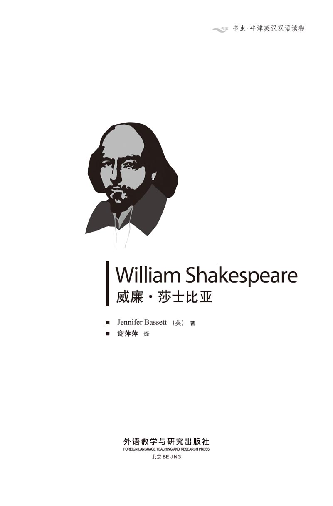
版权页
京权图字 01-96-1583
Originally published by Oxford University Press, Great Clarendon Street, Oxford. © 1993 This edition is licensed for sale in the People's Republic of China only and not for export therefrom.
'Oxford' is a registered trademark of Oxford University Press.
只限中华人民共和国境内销售，不包括香港特别行政区、澳门特别行政区及台湾省。不得出口。
图书在版编目（CIP）数据
威廉·莎士比亚 = William Shakespeare（英）巴西特（Bassett, J.）著；谢萍萍译．—北京：外语教学与研究出版社，1996.12（2014.11 重印）
（书虫·牛津英汉双语读物）
ISBN 978-7-5600-1177-6
Ⅰ．威… Ⅱ．①巴…②谢… Ⅲ．莎士比亚，W.（1564～1616）—生平事迹—对照读物—英、汉 Ⅳ．H319.4：K
中国版本图书馆CIP数据核字（96）第25591号
出版人： 蔡剑峰
责任编辑：余 军
出版发行：外语教学与研究出版社
社 址：北京市西三环北路19号（100089）
网 址：http://www.fltrp.com
版 次：1997年1月第1版
书 号：ISBN 978-7-5600-1177-6
* * *
凡侵权、盗版书籍线索，请联系我社法律事务部
举报电话：（010）88817519
电子邮箱：banquan@fltrp.com
法律顾问：立方律师事务所 刘旭东律师
中咨律师事务所 殷 斌律师
简介
简 介
1578年艾汶河畔的斯特拉福镇。有位男孩坐在书桌旁专心地学习，他认真听课、拼命看书。可他在想些什么呢？
1587年伦敦，一位年轻人首次到伦敦谋生。他听着闹市的喧嚣声，看看伦敦塔雄伟的大墙，望着泰晤士河的淙淙流水。“静谧的泰晤士河，潺潺地流淌，直到我唱完心中的歌。”
1601年伦敦。泰晤士河上的船夫对人群大声喊着：“快来，快来，快来呀！‘环球剧院’快挤满人啦！”2000多观众渡过河，前来观看莎士比亚的最新一部戏剧——《哈姆雷特》。
这本讲述莎士比亚生平故事的书是由托比叙述的。托比不是一个真实的人物——或许莎士比亚也曾有过这样一位朋友，不过，我们无法确知。但是书中的其他人物历史上确有其人。他们非常熟悉这位演员、诗人兼剧作家莎士比亚。他们称他“莎士比亚缙绅”，都认为他是英国最杰出的诗人。他的朋友本·琼生曾这样写道：
“他不属于一个时代，而是属于所有的时代。”
本书作者詹妮弗·芭斯特是位资历很深的教师和作家，她生活在英国西南的德文郡。
目录
1．Toby remembers
1
Toby remembers
My name is Toby. I'm an old man, eighty-three this spring. My house is right in the middle of Stratford- upon-Avon, and I can watch the street market from my window. But I live very quietly now. I'm just an old man, sitting in a chair.
I once knew the greatest man in England. For thirty years I was his friend. I worked with him in the theatre, through the good times and the bad times. He was a good friend to me. He was also the best playwright, the best poet, that ever lived in England. Will Shakespeare was his name.
I saw all his plays in the theatre. People loved them. They shouted, laughed and cried, ate oranges, and called for more. All kinds of people. Kings, Queens, Princes, great lords and ladies, poor people, the boys who held the horses... everyone. Will Shakespeare could please them all.
He put me in a play once. Well, he used my name—Toby. Twelfth Night was the play, I remember. Sir Toby Belch. He was a big fat man, who liked drinking too much and having a good time. Queen Elizabeth the First watched that play—on Twelfth Night, the 6th of January, 1601. She liked it, too.
Will's dead now, of course. He's been dead more than thirty years, and no one sees his plays now. The Puritans have closed all the theatres. There's no singing, no dancing, no plays. It wasn't like that in my young days. We had a good time in London, Will and I...
I've no teeth now, and my hair has all fallen out, but I can still think—and remember. I remember when Will and I were young, just boys really...
right adj. most suitable. 恰好。
playwright n. a writer of plays. 剧作家。
lord n. a noble man of high rank. 贵族。
please v. to make amusing remark; giving satisfaction (to). 取悦；使满足。
Puritan n. (in England and New England in the 16th and 17th centuries) (a member) of a religious group that wished to make religion simpler and opposed the use of ceremony in church services. （英格兰及新英格兰在16及17世纪的）清教徒（主张宗教简朴，反对宗教仪式）。
托比的回忆
1 托比的回忆
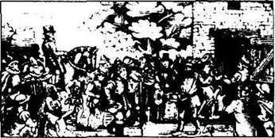
我叫托比，一位年迈的老人，今年春天年过83岁。我的家在艾汶河畔斯特拉福镇中心，透过窗户，便可以望到街道的闹市。我的生活平和宁静，我只是一位坐在椅子上安度晚年的老头子罢了。
我曾认识英国的一位最伟大的人物。我与他相交30年，同在剧团工作，也共同度过人生中欢乐与艰辛的岁月。他是我的好友，也是英国最优秀的剧作家，最杰出的诗人。他就是威尔·莎士比亚。
我看过他所有上演的戏剧。人们热爱他。观众们叫着、笑着，一边吃着桔子，一边嚷嚷着要看更多的戏剧。形形色色的人，上自国王、王后、王子和豪富名女，下至贫苦百姓和牵马的脚夫……所有的人，威尔·莎士比亚都能令他们开心欢娱。
他曾将我写进剧本，剧中用了我的原名——托比。我记得剧名为《第十二夜》，剧中的托比·培尔契爵士又大又胖而且喜欢酗酒行乐。女王伊丽莎白一世于1601年1月6号观看了此剧——《第十二夜》，也很喜欢。
当然威尔现在已不在人世，他过世都30多年了，如今没有人看他的戏。自从清教徒关闭了所有的剧院，就不再有歌声、舞蹈和戏剧了。如今的情形同我年轻时与威尔在伦敦度过的快乐时光相比已经大不一样了。
虽然我现在没有牙齿，头发也掉光了，但我还能思考——还能回忆，我记得威尔和我年轻的时候，还是孩子的时候……
2．Stratford-upon-Avon
2
Stratford-upon-Avon
It was a sunny day in October 1579 when I first met Will, just outside Stratford, near a big field of apple trees. I saw a boy up in one of the trees. He had red hair and looked about two years older than me.
'What are you doing up there?' I called.
'Just getting a few apples,' he said, smiling.
'Those are Farmer Nash's apples,' I said, 'and he'll send his dogs after you if he sees you.'
'Mr Nash has gone to market,' the boy said. 'Come on! They're good apples.'
The next minute I was up the tree with him. But Will was wrong. Farmer Nash wasn't at the market, and a few minutes later we saw his angry red face above the wall on the far side of the field.
Will and I ran like the wind and only stopped when we reached the river. We sat down to eat our apples.
Will was fifteen, and lived in Henley Street, he told me. His father was John Shakespeare, and he had a sister, Joan, and two younger brothers, Gilbert and Richard. There was another sister who died, I learnt later. And the next year he had another brother, little Edmund—the baby of the family.
'Now, what about you?' he asked.
'There's only me and my sister,' I said. 'My parents are dead, and we live with my mother's brother. He's a shoe maker in Ely Street and I work for him. What do you do?'
'I go to Mr Jenkins' school in Church Street,' Will said. 'Every day, from seven o'clock until five o'clock. Not Sundays, of course.'
I was sorry for him. 'Isn't it boring?' I asked.
'Sometimes. Usually it's all right.' He lay back and put his hands behind his head. 'But we have to read and learn all these Latin writers. I want to read modern writers, and English writers, like Geoffrey Chaucer. Can you read?' he asked.
'Of course I can read!' I said. 'I went to school.'
Will sat up and began to eat another apple. 'I want to be a writer,' he said. 'A poet. I want that more than anything in the world.'
We were friends from that day, until the day he died. We met nearly every day, and he taught me a lot about books and poetry and writers. He always had his nose in a book.
When Will left school, he worked for his father in Henley Street. John Shakespeare was a glove-maker, and he had other business too, like buying and selling sheep. But Will wasn't interested.
'What are we going to do, Toby?' he said to me one day. 'We can't spend all our lives making shoes and gloves!'
'Well,' I said, 'we could run away to sea and be sailors. Sail round the world, like Francis Drake.'
Drake sailed back to Plymouth in 1581, after his three-year journey round the world, but we were still in Stratford. We made lots of plans, but nothing ever came of them.
Will was still reading a lot and he was already writing poems himself. He sometimes showed them to me, and I said they were very good. I didn't really know anything about poetry then, but he was my friend.
Will was not happy with his writing. 'I've got so much to learn, Toby,' he said. 'So much to learn.'
Poor Will. He had a lot to learn about women, too. One day in October 1582 he came to my house with a long face.
'I'll never leave Stratford.' he said.
'Why not?' I asked. 'We'll get away one day. You'll see.'
'Perhaps you will,' he said, 'but I'm going to be married in a few weeks' time. To Anne Hathaway.'
My mouth fell open and stayed open. 'Married! To Anne Hathaway? Is that the Hathaways over at Shottery?'
'Yes,' Will said. I was working on some shoes on the table, and Will picked one up and looked at it.
'Well, er, she's a fine girl, of course,' I said uncomfortably. 'But... but, Will, she's twenty-six and you're only eighteen!'
'I know,' Will said. 'But I've got to marry her.'
'Oh no!' I said. 'You mean, she's...'
'That's right,' said Will. 'In about six months' time I'm going to be a father.'
sunny adj. having bright sunlight. 阳光充足的。
outside prep. 在外面；向……之外。
farmer n. a man who owns or plans the work on a farm. 农场主，农民。
market n. a building, square, or open place where people meet to buy and sell goods, esp. food, or sometimes animals. 市场，集市场所。
learn v. (learned or learnt) to become informed (of). 得知，获悉。
shoe-maker n. 鞋匠。
bore v. (boring) to make (someone) tired or uninterested, esp. by continual dull talk. （贬义）令人厌烦。
modern adj. of present time, or of the not far distant past; not ancient. 现代的；近代的。
nearly adv. almost; not quite or not yet completely. 几乎，近乎。
glove n. 手套。
interested adj. concerned; having or showing interest. 关切的，感兴趣的，表现出兴趣的。
sailor n. a person with a job on a ship, esp. one who is not a ship's officer. 船员，水手。
sail v. (of any ship) to travel on the water. （指任何船于水上）航行。
journey n. a trip of some distance. 旅行，旅程。
marry v. to take (a person) in marriage. 结婚。
uncomfortably adv. 不舒服地。
mean v. have in mind as or for a purpose. 意为。
艾汶河畔的斯特拉福镇
2 艾汶河畔的斯特拉福镇
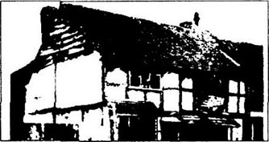
我第一次遇见威尔是在1579年10月的一天。那天，阳光明媚，就在斯特拉福镇外一座大苹果园附近，我看见有棵苹果树上坐着一位小男孩，长着红色头发，看模样大概大我两岁。
“你在上边干什么？”我叫道。
“摘几个苹果。”他笑着答道。
“那可是纳什农场主的苹果，”我说，“如果他发现了，就要放狗咬你的。”
“纳什先生去集市了，”男孩说道，“来吧！苹果不错。”
一会儿我也上了树。但是威尔错了，纳什先生并没去集市，几分钟后我们看见果园那端墙头露出一张气得发红的脸。
威尔和我见势撒腿就跑，一口气跑到河边才坐下来吃苹果。
威尔告诉我，他15岁，住在亨里街。他的父亲是约翰·莎士比亚，他有一个妹妹琼和两个弟弟，吉尔伯特和理查。我后来听说他还有一位姐姐死了。第二年他又添了一个弟弟——全家的宝贝小埃德蒙。
“那么你呢？”他问道。
“家里只有我和姐姐，”我说，“父母死后我们住在舅舅家。他是埃利街的一个鞋匠，我为他打工。你现在干什么？”
“我在教堂街詹金斯先生的学校念书，”威尔说，“每天从上午7点到下午5点上学，当然不包括星期天。”
我真为他难过。“这难道不乏味吗？”我问道。
“偶尔有这种感觉，不过通常觉得不错。”他仰身躺下，头枕着双手，“在学校，我们不得不学习所有那些拉丁作家的作品。可我想阅读现代作家和英国作家的作品，比如杰弗利·乔叟。你会看书吗？”他问道。
“当然会啦！”我说，“我上过学。”
威尔坐起来又吃了一个苹果。“我想成为作家，”他继续说道，“诗人。世上再没有比这更令我神往的了。”
自那天起我们就成了朋友，直到他过世。我们几乎每天见面，他教了我许多关于书本、诗歌和作家的知识。他总是埋头博览群书。
威尔离开学校后就在亨里街帮助父亲料理生意。约翰·莎士比亚是一位手套工匠，同时经营其他生意，如买卖羊只。但威尔对做生意却不感兴趣。
“托比，接下来你有何打算？”有一天他问我。“我们不能一辈子都做鞋和手套吧！”
“对呀，”我说，“我们跑到海上当水手去，像弗朗西斯·杜雷克一样环绕地球航行。”
杜雷克在完成历时三年的环绕地球航行后于1581年回到普利茅斯，可我们还是待在斯特拉福镇。尽管也制定了种种计划，但始终未付诸行动。
这段时间威尔依然博览群书并开始写诗，偶尔还给我看他写的诗。虽然嘴上我都说他的诗写得好，实际上我对诗歌是一窍不通。只不过他是我的好友我才这么说。
威尔对自己的诗歌并不满意。“托比，我要学的东西太多了。”他说，“实在太多了。”
可怜的威尔。他还得学会了解女人。1582年10月的一天他来到我的住处，神情忧郁。
“我永远不能离开斯特拉福镇了。”他说。
“为什么不能？”我问道，“总有一天我们会离开此地。你等着瞧。”
“或许你还行，”他说，“但过几个星期我就要结婚了。同安·哈瑟维结婚。”
一听此言我张着嘴愣了好久。“结婚。同安·哈瑟维结婚？你是说肖特雷邻乡哈瑟维家的女儿？”
“没错。”威尔说。当时我在做鞋，威尔拿起桌上一只鞋，看看。
“当然，嗯，她是个好姑娘，”我不自在地说道，“不过……不过，威尔，她已经26岁了，你才18岁呀！”
“我知道，”威尔说，“但是我非娶她不可。”
“哦，不！”我说，“你的意思是，她已经……”
“你猜对了，”威尔说道，“再过6个月我就要当爸爸了。”
3．The actors come to town
3
The actors come to town
Will married Anne Hathaway in November, and she came to live in Henley Street. John Shakespeare was pleased that his oldest son was married, but I don't think Will's mother wanted him to marry so young. Families cost a lot of money, and John Shakespeare was having a lot of money troubles in those days. Times were hard in Henley Street.
Susanna was born the next May. All babies look the same to me, but Will was very pleased with her.
'Look, Toby, she's got my eyes,' he said happily. 'She's going to be as beautiful as the Queen of Egypt, and as clever as King Solomon.'
'Oh yes?' I said. 'All parents talk like that about their children. I don't believe a word of it.'
I didn't see much of Will's wife. I knew she didn't like me. To her, I was one of Will's wild friends, who got him into trouble. She came from a very serious, Puritan family. Lots of church-going, and no singing or dancing.
Soon there was another baby on the way, and one evening in February 1585 I hurried round to Henley Street to hear the news. Will's sister, Joan, opened the door, and then Will came running down the stairs.
'It's two of them!' he said. 'Twins! A girl and a boy. Isn't that wonderful!'
Will had some good friends, Hamnet and Judith Sadler, and he called the twins after them. John Shakespeare was very pleased to have his first grandson, and everyone was happy. For a while.
Will and I still went around together when we could. He was still reading, and writing, and soon I could see a change in him. He was twenty-three now, and he was not happy with his life.
'Stratford's too small, Toby,' he said. 'Too slow. Too quiet. Too boring. I've got to get away.'
'Yes, but how?' I asked. 'You've got a family—three young children, remember.'
He didn't answer.
In the summer months companies of players often came to small towns, and in 1587 five different companies came. Will and I always went to see the plays. Will loved to talk to the actors and to listen to all their stories of London.
The Queen's Men came to Stratford in June, and we went to see the play. I don't remember what it was. I know that I laughed a lot, and that Will said it was a stupid play, with not a word of poetry in it.
'Why don't you write a play yourself?' I told him.
'Write a play?' He laughed. 'Anne would never speak to me again.'
I didn't say anything, and Will looked at me and laughed again.
It happened a few months later. I walked into the Shakespeares' kitchen one evening, and there was Anne, with a red, angry face, shouting at the top of her voice.
'How can you do this to me? And what about the children?' Then she saw me and stopped.
Will was sitting at the table, and looked pleased to see me. 'I've told Anne,' he said quietly, 'that I'm going to live in London. I want to be an actor, and to write plays, if I can.'
'Plays!' screamed Anne. 'Acting! Actors are dirty, wicked people! They're all thieves and criminals! They drink all day and they never go to church—'
'Don't be stupid, Anne. You know that's not true. Listen. I'll come home when I can, but I must go to London. I can't do anything in Stratford.' He looked at me across the room. 'Are you coming with me, Toby?'
'How soon can we start?' I said.
actor n. a man who acts a part in a play. 演员。
trouble n. difficulty. 困难。
wild adj. 粗野的。
serious adj. (esp. of a person's manner or character) thoughtful; solemn not gay or cheerful. （尤指人之态度或性格）严肃的，严谨的。
twin n. either of 2 children born of the same mother at the same time. 双胞胎。
wonderful adj. 绝妙的。
grandson n. 孙子，外孙。
change n. the act or result of changing. 改变。
company n. a group of actors who work together. 伙伴，伴侣。
stupid adj. silly or foolish, either generally or in a action. 呆笨的，傻的。
poetry n. quality of beauty, grace, and deep feeling. 诗意，诗情。
at the top of one's voice 高声。
scream v. to make a loud noise of anger (complaint, demand, etc.). 高声表示愤怒（不平，要求等）。
wicked adj. very bad; evil. 坏透的，险恶的。
criminal n. a person who is guilty of crime. 罪犯。
across prep. to or on the opposite side (of). 到对面；在对面。
演员来到镇上
3 演员来到镇上
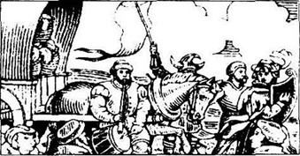
11月威尔和安·哈瑟维结婚了，安住进了亨里街。约翰·莎士比亚见长子成家心里很高兴，可我觉得威尔的母亲并不想他这么早就结婚。结婚花了家里不少钱，再加上约翰·莎士比亚那段时间财运不济，日子过得有点艰难。
次年5月苏姗娜出世。对我来说，所有的孩子都没什么不一样，但威尔欣喜若狂。
“托比，你瞧，她的眼睛长得真像我，”他高兴地说着，“长大后，她会美丽如埃及艳后，聪明如所罗门国王。”
“是吗？”我说，“所有父母都是这么说自己的孩子。我一个字也不信。”
我不常见到威尔夫人，也清楚她不喜欢我。对她而言，我是威尔的一个粗野朋友，这种朋友只会让他出麻烦。她出生于一个虔诚的清教徒家庭，经常去教堂，从来不唱歌、跳舞。
不久，又一个孩子要出世了。1585年2月的一个夜晚我急匆匆地赶到亨里街去打听消息。威尔的妹妹琼为我开了门，接着就见威尔跑下楼梯。
“一胎两个呢！”他说道，“是双胞胎！一女一男。真是妙极了！”
威尔根据好友哈姆奈特和珠迪丝·塞德勒的名字给孪生子女起了名。约翰·莎士比亚见第一个孙子出世，由衷地高兴。有一段时间，每一个人都很快乐。
只要有机会威尔和我仍然经常来往，他依然读书写作，但是不久，我发现他变了。当时他23岁，但对生活不再知足。
“托比，斯特拉福镇实在太小了，”他说道，“发展缓慢，生活安静，日子又单调，我必须离开这里。”
“是啊，可怎么离开呢？”我问道，“别忘了，你已经成家——还有三个孩子。”
他没有答话。
夏天经常有剧团到小镇巡回演出，1587年分别来了五个剧团。威尔和我总是结伴去看戏。威尔爱找演员们交谈，听他们讲发生在伦敦的故事。
6月“女王剧团”来到斯特拉福镇，我们又去看戏。这出戏的内容我已记不清楚，只记得当时看了开怀大笑，但是威尔说这戏很糟糕，没有一句像样的诗歌。
“那你为什么不自己动手写剧本呢？”我告诉他。
“写剧本？”他大笑，“安会再也不理我的。”
我不再说什么，威尔看看我又笑了。
几个月后事情就发生了。一天晚上我走进莎士比亚家的厨房，只见安涨红着脸，气呼呼地，她高声嚷着：
“你怎么能这样对我？孩子怎么办？”这时她瞧见我就将话止住了。
威尔坐在桌旁，见我来很高兴。“我已经告诉安了。”他平静地说道，“我打算到伦敦去谋生。我想当一名演员，如果行的话，写写剧本。”
“写剧本！”安尖声叫起来，“去演戏！演员是肮脏卑劣的人。他们都是小偷和罪犯！整天只知道喝酒行乐，也从来不去教堂——”
“别犯傻了，安。你知道事实并不是这样。听着，一有机会我就回家探望，但我非去伦敦不可。待在斯特拉福镇我不会有作为的。”他看了看房间对面的我，“托比，你想一起去吗？”
“什么时候动身？”我说道。
4．A new life in London
4
A new life in London
It's two days' journey to London by horse, and Will talked all the way. His eyes were bright and excited. He was full of plans, and poems, and a love of life.
'I talked to one of the Queen's Men,' he told me. 'He said that he could find me work in the theatre. Acting, perhaps. Or helping to write some plays. I showed him some of my writing, and he was very interested.'
When we rode into London, I began to feel afraid. This was a big, big city, and we were just two unimportant young men from a small town. I'll never forget the noise, and the smells, and the crowds. There were 200,000 people living in the City of London—I never saw so many people before in my life.
We went down to the river Thames and saw the famous London Bridge, with all its shops and houses. Down the river was the Tower of London. Enemies of the Queen went into the Tower through the river gate, and mostly came out without their heads.
We found a small inn in Eastcheap, not too expensive, and had some bread, meat, and beer for our supper.
'Well, we're here!' Will said. 'At last!'
'Mmm,' I said. 'What do we do next?'
He laughed. 'Everything!'
The next day we began to look for work.
Those early years were wonderful. We didn't have much money, of course, and we had to work very hard. A new actor only got six shillings a week, and there wasn't work every week. I decided not to be an actor.
'Why not?' said Will. 'It's a great life.'
We were working that month for the Queen's Men at the theatre called The Curtain up in Shoreditch. Will was acting four small parts in two different plays. He played a soldier and a murderer in one play, and in the other play he was a thief, and also an Italian lord in love with the Queen of the Night. And he loved it.
'I'm not clever like you,' I said. 'I can't remember all those words. I forget who I am! I say the soldier's words, when I'm an Italian lord. I come on stage too late, or too soon. I stand in all the wrong places...'
Will laughed. 'What are you going to do, then?'
'Costumes,' I said. 'And properties. I had a talk with John Heminges, and he said they need a new man to help with all the clothes and the other things.'
'Yes,' Will said slowly. 'You'll be good at that. Now, I've got a fight on stage tomorrow, and I have to die with lots of blood. How are you going to get me some blood?'
'I've already got it!' I smiled kindly at him. 'Sheep's blood. I got it down at Smithfield market this morning. You can have as much blood as you want. I'm keeping it warm for you!'
Will was good at acting. Not the best, but good. An actor had to do everything. He had to learn his words, of course— perhaps for six different plays at the same time. No theatre put on the same play every day. He had to dance, and sing, and play music. He had to jump, and fall, and fight. And the fights had to look real. The playgoers of London knew a real fight when they saw one.
John Heminges of the Queen's Men taught us both a lot. He was a good friend, then and for many years.
I had a lot to learn, too. I learnt how to make shoes out of brown paper. How to clean the actors' hats with a bit of bread. Then they looked like new again. I ran all over London to buy the best hair for the wigs. I learnt how to make fish, and fruit, and a piece of meat out of wood and coloured paper.
Will was busy day and night. I don't know when he slept. He was acting in plays, he was writing his own plays, he was reading books, he was meeting other writers, making friends... He was learning, learning, learning.
One day we were having a glass of beer with Richard Burbage at the Boar's Head in Eastcheap. Burbage was an actor with Lord Strange's Men. He was very friendly with Will.
'You've written four plays now, Will,' he said. 'They're good, and you're getting better all the time. And I'm getting better as an actor all the time. Come and work with Lord Strange's Men at the Rose theatre on Bankside. You can write for us.'
So we both went to the Rose. John Heminges came with us, and Augustine Phillips—he was a good actor, too.
We worked harder than ever at the Rose. Plays were always in the afternoon, because of the daylight. We had rehearsals in the morning, and by lunch-time people were already coming across the river to get their places for the play. And more and more people came. By 1592 London was hearing the name William Shakespeare again and again.
ride into 乘（马车）。
crowd n. a large number of people gathered together. 群聚。
Tower of London 伦敦塔。
enemy n. a person who hates or dislikes another person. 敌人。
mostly adv. in the greatest number of cases. 多半地。
inn n. a small hotel or place where one can stay and /or drink alcohol, eat meals etc. 小旅馆；客栈。
expensive adj. 贵的。
Shilling n. a coin in old English money (about 5p in new English money). 先令。
decide v. to make up one's mind. 决心。
soldier n. a member of an army. 士兵。
murderer n. 凶杀犯。
lord n. 勋爵。
costume n. the special clothes that an actor wears. 戏装。
property n. (in a theatre) the things which are needed on stage for a place eg. chairs, tables, boxes, bags, plates, a tree. 道具。
stage n. the part of a theatre where actors stand and move. 舞台。
blood n. 血。
jump v. 跳跃。
real adj. true, not false. 真的。
playgoer n. a person who goes to see plays, esp. regularly. 经常去看戏的人。
brown paper 牛皮纸。
wig n. hair which is not real 假发。
fruit n. 水果。
daylight n. 日光。
rehearsal n. when actors practise a play before they act in front of other people. 排练，预演。
伦敦的新生活
4 伦敦的新生活
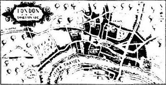
坐了两天的马车之后我们抵达伦敦，一路上威尔谈笑风生，双眼熠熠生辉，此时他踌躇满志，对生活无限热爱。
“我和‘女王剧团’的一个演员聊过天，”他告诉我，“他说可以帮我在剧团找个活干，或许可以演戏，或者让我帮忙写剧本。我给他看过一些我的作品，他很感兴趣。”
我们驱车进入伦敦城时，我开始感到心慌。这是很大、很大的一座城市，而我们只是两个从小镇来的微不足道的小伙子。城市的拥挤、喧嚣掺和着种种气味令我至今记忆犹新。伦敦市内生活着20万居民——我以前从未见过这么多的人。
我们来到了泰晤士河，看到了著名的伦敦桥以及所有的商店和住宅。河下游便是伦敦塔，女王的敌人从河上的闸门进入这座塔，他们中的多数就在此掉了脑袋。
我们在东切普街找到一处不太贵的小客栈住下，晚饭吃了几块面包、肉，喝了点啤酒。
“哇，我们到这儿了！”威尔说道，“终于到了！”
“是啊，”我说，“接下来我们干什么呢？”
他笑道：“什么都干！”
第二天我们便出去找活干。
在伦敦最初几年的情况很好。由于身边钱不多，我们不得不努力工作。因为新演员一星期只能拿到6先令的报酬，更何况并不是每个星期都能上台演出，最后我决定放弃做演员。
“为什么不干呢？”威尔说道，“这种生活不是很好吗。”
那个月我们工作的“女王剧团”正在滨渠街的“窗帘剧院”演出。威尔分别在两出不同的戏中扮演了四个小角色，在一出戏中扮演士兵和凶杀犯，在另一出戏中扮演小偷和一位爱上奈特王后的意大利勋爵。他很喜欢这份工作。
“我不像你那样聪明，”我说，“我总记不住全部的台词。上了台又忘记自己演的角色！当我演意大利勋爵时我竟背出演士兵的台词。上台不是太迟就是太快，还会站错位置。”
威尔笑道，“那你打算怎么办？”
“做戏装，”我说，“还有道具。我和约翰·海明谈过了，他说剧团也正需要添个人手帮着安排戏装和其他事情。”
“那好吧，”威尔慢慢地说道，“你会干好的。对了，明天上台我要参加决斗，并且最后要失血过多而死。你打算怎样弄到血呢？”
“我早准备好啦！”我温和地笑道，“是羊血。今天早上我跑了一趟史密斯菲尔德市场，你要多少血就有多少血。我会替你维持它的温度。”
威尔善于演戏。虽称不上最出色，但已算很好的了。演员事事都得干。最起码得学会背台词——有可能同时得背六出不同的戏的台词，因为戏院并非每天上演同一出戏。演员还得会演奏，得能歌善舞，还要跳跃，摔跤和决斗。决斗必须看起来像真的一样，否则伦敦的戏迷们一眼就可以看出真假。
“女王剧团”的约翰·海明成了我们多年的朋友，他教会我们俩许多东西。
当然我要学的东西很多。我学会了如何用牛皮纸做鞋，学会了用一点面包就能洗掉演员帽子上的污渍，使帽子焕然一新。我要跑遍伦敦买到最好的头发制成假发，还懂得如何用木头和彩色纸做成鱼、水果和肉片。
威尔夜以继日地忙碌，我都不知道他什么时候睡觉。他演戏，写他自己的剧本，看书，接触其他作家，结识新朋友……他一直在学习、学习、再学习。
一天我们在东切普街的公猪头酒吧同理查·白贝芝喝酒。白贝芝是“斯特林奇大臣剧团”的演员，对威尔很友好。
“威尔，你已经创作了四个剧本，”他说道，“剧本写得不错，而且你一直在进步，而我也越演越好。你就到‘斯特林奇大臣剧团’来，在河滨的‘玫瑰剧院’工作吧。你可以为我们写剧本。”
于是我们俩都进了“玫瑰剧院”。一起过来的还有约翰·海明和奥古斯丁·菲利普——他也是个好演员。
在“玫瑰剧院”，我们比以往更加努力工作。由于光线的缘故，演出总是被安排在下午。于是，我们在上午排练，到了吃午饭时，人们已经陆续过河来占位子等候看戏，而且每次来的观众有增无减。时至1592年，威廉·莎士比亚在伦敦已颇具名望。
5．The plague years
5
The plague years
Will wrote his play Richard Ⅲ for Richard Burbage, and it was a great success. Richard the Third was a wicked king—a murderer—but he was wonderful on the stage, with Burbage's great voice and fine acting. Soon all London was saying King Richard's famous words when his horse is killed in war:
A horse! A horse! My kingdom for a horse!
All kinds of people came to see plays and Will was making a lot of new friends. One day, after the play, he was talking to a young man outside the Rose. He was a very beautiful young man, a bit like a girl, perhaps—but still very good-looking. Later, I asked Will who he was.
'The Earl of Southampton,' Will said. 'He's only eighteen, but he loves poetry and plays.'
'Isn't he a friend of the Earl of Essex?' I asked. Everybody knew the Earl of Essex. He was young and good looking —and some people said that Queen Elizabeth was in love with him.
I don't know about that. The Queen was fifty-nine years old, and a very, very clever woman. But it was true that she liked to have good-looking young men around her, and the Earl of Essex was her favourite. Then. It all changed later, of course.
'Yes, he is,' said Will. 'But I think Essex is a dangerous man. Henry needs better friends than him.'
'Henry, eh?' I said, surprised. 'My word! Do you really call him Henry? Not Lord Southampton?'
'Only when other people aren't there.' Will laughed. 'I'm still just an actor from Stratford, Toby. Not very important. Let's go and have a drink at the Boar's Head on our way home.'
Will was always like that. Quiet, never shouting about himself to the world.
In the Boar's Head we met some friends and started talking. The talk was all about the plague, which was coming back again into London.
'Have you heard the latest news?' said one man. 'They say that more than thirty people are dying every week now.'
'And the City Council,' said another man, 'wants to close all the theatres. They always do that when the plague comes to London. There'll be no work for any of us actors.'
'But the players can go on tour, surely?' said Will.
'Yes,' said the first man. 'But it's a hard life. A different town, a different inn, a different play, every night. I think I'll stay in London.'
The plague is terrible in any place, but it was worst in London. In those narrow streets, with houses so close together, and the dirty water running down the middle of the street, there was no escape. When the plague came, it ran like fire through the town. If someone in a house got the plague, then the doors were shut and locked, and a big red cross was put on the door. Nobody could leave the house. You had to stay inside and fight—or die. If you were rich, you left London as fast as you could.
In September 1592 the City Council closed the theatres.
'Are we going on tour, Will?' I said to him one day. 'Or back to Stratford? We can't stay in London.'
'You go back to Stratford, Toby,' he said slowly. 'I'm going to Lord Southampton's home in Hampshire for a while. He's asked me to go and stay with him. I can do some writing there, read his books, meet a few people.'
I looked at him. 'There's a woman in this somewhere, isn't there? You've had a strange look in your eyes for weeks.'
Will laughed, but didn't answer my question.
The theatres in London didn't open again until June 1594. Will often visited Lord Southampton, but sometimes we went on tour with the company, or spent time at home in Stratford. Will began to spend more time in Stratford, because it was quiet there, and he could do his writing. I never heard what Anne thought about it all.
During those years Will wrote a lot of poetry. He wrote his beautiful long poem, Venus and Adonis, for his friend Lord Southampton, and he wrote many of his famous short poems, the Sonnets. But they didn't go in a book; they were only for his friends to read.
One day, when we were back in London, I was reading some of his latest sonnets. Will was out somewhere, and I was at home in our lodgings in Bishopsgate. A lot of the poems were about a woman, a terrible, black-haired, black-eyed woman. She was cold and cruel, then she was true and loving, and then she was cruel again.
For I have sworn thee fair, and thought the bright,
Who art as black as hell, as dark as night.
Was Will writing about himself here? I asked myself. And who was this woman, this Dark Lady?
I always like to know what's going on, so I listened, and watched, and looked at all his women friends.
Then one day I saw her. I was coming in the door at our lodgings, and she was coming downstairs. She had black hair and great stormy black eyes, and there was gold at her ears and round her neck. I stood back and she went past me like a ship sailing into war. She looked wild, and angry, and very, very beautiful.
'Whew!' I said to myself. 'If that's Will's Dark Lady, he'll never have a quiet, easy life!'
The woman looked Italian, so I went and asked John Florio about her. Florio was Lord Southampton's Italian teacher. We saw a lot of him in those days.
I described the woman, and he knew her at once.
'Emilia,' he said. 'Emilia Bassano. Now Emilia Lanier, wife to Alphonso Lanier. Before that, she lived with the old Lord Chamberlain. She was not his wife, you understand. But why do you want to know, my friend?'
'If she's a married lady, she doesn't have a lover now, then?'
Florio laughed loudly. 'Lovers! You don't know Emilia Lanier! She's a bad woman, my friend, a bad woman.' Now he spoke very quietly. 'For a time she was the friend of Lord Southampton. But not now. That is all finished.'
I didn't ask him about Will. Perhaps Emilia Lanier was Will's Dark Lady, or perhaps Will was just trying to help his friend Lord Southampton. Nobody will ever know now.
plague n. a quick-spreading quick-killing disease that produces high fever and swellings on the body 瘟疫。
wicked adj. very bad or wrong. 邪恶的，不道德的。
good-looking adj. attractive; beautiful. 美貌的；漂亮的。
Earl n. 伯爵
around prep. on all sides of; surrounding. 围绕。
favourite n. sth. or someone that is loved above all others. 最喜爱之物或人。
dangerous adj. able to or likely to cause danger. 危险的。
tour n. a journey from place to place as made by a company of actors in order to perform, by an important person to make official visits. 巡回演出（访问等）。
narrow adj. 狭窄的。
dirty water n. 污水。
escape v. (of a person) to avoid (a stated evil). 避免。
inside adv. to or in the house. 在户内。
City Council n. 市政参议会。
until prep. 直到。
Sonnet a 14-line poem with any of several fixed formal patterns of line endings. 十四行诗
lodging n. a house where rooms are rented out. 公寓。
cruel adj. taking pleasure in the pain of another; unkind. 冷酷的。
swear v. (swore. sworn) to curse. 咒骂。
thee pron. (old use). you. （旧用法）汝。
hell n. 地狱。
stormy adj. showing noisy expressions of feeling. 激昂的。
whew 哎呀。
describe v. to give a picture in words. 描述。
lover n. one who lovers another, especially one who feels sexual love. 情人。
瘟疫流行时期
5 瘟疫流行时期
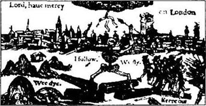
威尔为理查·白贝芝编写了剧本《理查三世》，获得巨大成功。剧中的理查三世是个狡诈的暴君——一个凶手——但白贝芝雄浑的嗓音和精彩的表演使这一形象在舞台上活灵活现。不久全伦敦传遍了在战场上理查王的马被宰时，他的那句名言：
“一匹马！一匹马！我的国家换一匹马！”
形形色色的人慕名来看戏，威尔也因此结交了许多新朋友。一天，演出结束后，我看见在“玫瑰剧院”外他正和一个年轻人交谈。这人年少英俊，或许有点像女孩，不过依然相貌堂堂。后来，我向威尔问起这个人。
“他是索桑普敦伯爵，”威尔说道，“他年仅18岁，但热爱诗歌和戏剧。”
“他是不是爱塞克斯伯爵的朋友？”我问他。爱塞克斯伯爵无人不晓。他年轻英俊——有人说伊丽莎白女王也爱着他。
这件事我倒不清楚。女王年已59岁，是个非常非常聪明的女人。但是女王喜欢年轻的、面目俊俏的男人陪伴左右是千真万确的，而爱塞克斯伯爵最得宠。当然，后来一切都变了。
“是的，”威尔说道，“但我认为爱塞克斯是个危险的人物。亨利需要结交比他更好的朋友。”
“哦，亨利？”我诧异地说道，“真没想到！你真的叫他亨利吗？而不叫索桑普敦伯爵？”
“只有别人不在时才叫的，”威尔笑了起来，“托比，毕竟我还只是从斯特拉福镇来的一个演员而已，无足轻重。我们回去吧，顺便到公猪头酒吧喝一杯。”
威尔这人就是这样，处世稳重，从不对世人标榜自己。
在公猪头酒吧我们遇见几位朋友，便开始聊起天来。话题都是关于伦敦这次卷土重来的瘟疫。
“你是否听说了最新消息？”有人说道，“他们说，现在每星期都有30多人濒临死亡。”
“还听说市政参议会，”又有人说道，“准备关闭所有剧院。每回伦敦流行瘟疫他们都这么做。我们这些演员要失业了。”
“但是我们可以巡回演出，不是吗？”威尔建议道。
“可以，”第一个开口的人说道，“但那样生活很辛苦。我们每晚都要颠沛辗转，不同的村庄、不同的旅社、不同的剧目，我宁愿待在伦敦。”
其实，各地瘟疫都很严重，只不过伦敦尤其厉害。狭窄的街道、拥挤的房屋，街道中心污水横流，人们又怎能幸免。瘟疫如火，势不可挡，迅速传遍全城。一旦哪家有人染上了瘟疫，就被封闭房门，贴上红十字。谁都无法从里面出来，只得待在家里与病魔作斗争——或者等死。如果家境富裕，还是尽早搬离伦敦才为上策。
1592年9月市政参议会封闭了剧院。
“威尔，我们是去巡回演出呢？”有一天我问起他，“还是回斯特拉福镇？伦敦不能久留了。”
“托比，你回斯特拉福镇吧，”他缓缓地说道，“我暂时到汉普郡的索桑普敦勋爵家住一阵。他已经邀我和他同住。在那儿我可以搞搞创作，看看书，会会客人。”
我看着他说道：“此外也多少有点因为一个女人，是吧？几个星期来，你神情总有点怪怪的。”
威尔笑了起来，但没有回答我的问话。
伦敦的剧院到1594年6月才重新开放。威尔常去拜访索桑普敦勋爵，有时我们也随剧团到各地巡回演出，或者待在斯特拉福镇家中。威尔开始花更多的时间待在斯特拉福镇，因为小镇的宁静，他可以安心搞创作。我从没听到安对此作何想法。
这些年间威尔创作了大量的诗歌。他写了绮丽的长诗《维纳斯与阿童尼》献给好友索桑普敦勋爵，而且也创作了许多著名的短诗，十四行诗。但这些诗歌并没有编辑成书，只供朋友赏读。
我们又回到伦敦后的一天，威尔出门去了，我一个人待在“毕晓普门街”的公寓里，翻阅着他最新创作的一些十四行诗。这组诗大都描写一个女人，一个黑头发、黑眼睛的可怕的女人。她性情乖张善变，一会儿冷若冰霜，冷酷无情，一会儿又热情洋溢，真诚多情。
“因为我曾赌咒说你美，说你璀粲，
你却是地狱一般黑，夜一般暗。”
威尔诗中写的是自己吗？我不禁纳闷。这女人是谁？这个黑女人会是谁呢？
我这人总喜欢将事情弄个水落石出。于是我仔细观察他的每位异性朋友。
于是有一天我碰见了她。那天我正走进公寓大门，正巧她下楼。她有一头乌黑的头发，一双烈性的黑眼睛，戴着金耳环，挂着金项链。我往后退几步为她让路，而她犹如一艘奔赴战场的战舰一般走过我身旁。看模样她狂妄不羁，一腔怒气，但确是一个尤物。
“哎呀！”我心里想，“如果这就是威尔诗中的那位黑女人，那他的生活就不得安宁了。”
这女人看上去像意大利人，我便去问约翰·佛罗里欧。佛罗里欧是索桑普敦勋爵的意大利语教师。那些日子我们时常见面。
我把这女子描述了一番，他立即想起来了。
“是埃米莉亚，”他说道，“埃米莉亚·巴塞诺。现在叫埃米莉亚·拉尼尔夫人，阿尔索·拉尼尔的妻子。这之前，她和那个老张伯伦爵士住在一起。你也清楚她不是他的夫人。但我的朋友，你怎么打听起她来了？”
“如果她是有夫之妇，那么现在她没有情人吧？”
佛罗里欧大笑起来。“情人！你还不了解埃米莉亚·拉尼尔的为人吧！我的朋友，她可是个坏女人，一个坏透了的女人。”这时他语气轻缓了下来，“曾有一段时间她是索桑普敦的朋友。不过不是现在，一切都结束了。”
我不再向他打听威尔的情况。或许埃米莉亚·拉尼尔就是威尔的黑女人，或许威尔只是想帮助他的好友索桑普敦勋爵。现在也无从确知了。
6．Death in the family
6
Death in the family
After the plague years, we were busy all the time. There were new companies of players and Will now belonged to the Lord Chamberlain's Men. The Lord Chamberlain was a very important man, close to the Queen, and we often put on plays for the Queen's court, and in the houses of the great lords of England. We had some very good actors. There was Will, and Richard Burbage, of course, and John Heminges. And there was Augustine Phillips, Henry Condell, and Thomas Pope. There were other actors, too, but those six were the real company. They worked together for more than twenty years. And made a lot of money, too.
I did the costumes and properties for the Chamberlain's. John Heminges said I was the best properties man in the city.
Will was special—because he wrote the plays. And what plays they were! He never wrote the same play twice, like some writers. He was always trying something new, something different. And he wrote fast, too.
John Heminges could never understand that. 'How can you write so fast, Will?' he asked him. 'And you never make a mistake or change a word.'
Will didn't really understand it himself. 'It's all in my head,' he said. 'I think about it, and then it just comes out on paper.'
He wrote a play about love in 1595. Young love. It was Romeo and Juliet. It was a very sad play, because the young lovers die at the end. But the playgoers loved it. They wanted to see it again and again.
Will played the part of old Capulet, Juliet's father. One of the boy actors played the part of Juliet. There were no women actors, so boys played all the women's parts. Of course, Will never put real love-making on stage. He did it all with words—clever, beautiful words, and you forgot that the women and girls were really boys in dresses. Some of the boy actors were very good, and went on to play men's parts when they were older.
We played Romeo and Juliet at Richmond Palace that year. We always played before the Queen at Christmas. She liked to see the new plays, and she paid us ￡ 10 a play. We often had to work through the night to get the stage ready in time, but it was exciting to be in one of the Queen's palaces at Christmas. There was a lot of singing and dancing, and eating and drinking. Some years Christmas began in November and didn't finish until February or March.
The year 1596 began well, but that summer the weather was really bad. Cold. Wet. It never stopped raining, and the plague began to come back into London. We were in Stratford for the summer, but I went down to Hampshire for a few weeks to do some business for Will about some sheep. Will didn't need me at home, because he was busy writing his new play, A Midsummer Night's Dream.
I came back to Stratford one wet August evening. The house in Henley Street was strangely quiet, and I went round the back and up to Will's room—his writing room, we called it. He was just sitting there... not doing anything, just sitting.
'What's the matter, Will?' I said. 'Where is everybody?'
'At church.' His face was grey, and his eyes looked empty, dead.
'What's happened?' I asked. 'What is it?'
He looked at me. 'Hamnet...' he began. 'Hamnet was ill last week, and... and he died, yesterday. He was only eleven, Toby, and he's dead. My boy. My only son. He's dead, Toby. Dead.' He put his face in his hands.
What can you say to a man when something like that happens to him? I sat down next to him and put my hand on his arm. We sat together, silently. I knew that Will loved that boy of his—red-haired, bright as a new penny, full of life. Just like his father.
After a while I said, 'You'll have other sons.'
'Anne's forty already.' Will's voice was tired. 'She's had no children since the twins.'
'Well, now, you've got two fine girls in Susanna and Judith. They'll marry before long, and then you'll have more grandsons than you can count. You'll see. There'll be boys running up and down stairs, shouting for their Granddad Will!'
He smiled sadly, but his eyes were not so empty now. Pleased, I went on quickly:
'And there are all your brothers—Gilbert, Richard, Edmund. They'll have sons too. The Shakespeare family will never die out. Think of the family, Will, the family!'
And he did. He was already a famous poet and playwright, but he was a family man, too. The next year, 1597, he bought a new house for his family. It was a big, grand house, called New Place, right in the middle of Stratford. It cost ￡60—a lot of money—and the townspeople began to say 'Mr Shakespeare', not 'Young Will the actor' or 'John Shakespeare's boy'. They were happy to do business with him, and to borrow money from him.
Anne was very pleased with the new house. The wife of Mr Shakespeare of New Place was an important person in Stratford. But she still didn't like Will's work.
'Actors are wild, dangerous people,' she often said to him. 'I'm not interested in plays or the theatre, and I don't want to know anything about your work.'
But she liked the money, and the new house, and the new dresses—and the six fields of apple trees and the big farm north of Stratford that came a few years later.
Will never talked much about Hamnet. Life goes on and Will was busier than ever. But I know he thought about his son a lot; his grief was very deep inside him. A year or two later, I was talking to John Heminges about the costumes for Will's new play, King John. John Heminges was a family man—he had fourteen children in the end. The noise in his house! Shouting and laughing, coming and going...
John was looking at the playbook. 'You see this bit here, Toby,' he said. 'Will's writing about his son, isn't he?'
I read the words slowly, and remembered Will's empty eyes that day in August.
Grief fills the room up of my absent child,
Lies in his bed, walks up and down with me,
Puts on his pretty looks, repeats his words ...
Richard Burbage said once that Will's writing changed after Hamnet's death. Will still laughed at people in his plays, but he also felt sorry for them—sorry for all the world, good and bad, rich and poor, young and old. And his people were real. No one was all good, or all bad.
There was a man called Shylock in his play The Merchant of Venice. This Shylock was a money-lender and a cruel man —everyone hated him. But in the end, when Shylock lost everything, you had to feel sorry for him. He was just a sad old man.
Perhaps Richard was right. And if anyone understood Will, it was Richard Burbage.
belong to be a member of (an organization). 成为（组织）之一员。
chambelain n. an important official appointed to direct the house-keeping affairs of a king or nobleman's court. 国王内侍；贵族管家。
court n. the officials, noblemen, servants, etc. who attend a king or queen. 朝臣。
special adj particularly great or fine. 特别好的。
twice adv. 2 times. 两次。
come out on paper. 跃然纸上。
Romeo and Juliet 罗密欧与朱丽叶。
love-making 渲染情爱。
in dresses 身着女装。
in time 及时。
midsummer n. the middle of summer. 仲夏。
dream n. 梦。
strangely adv. surprisingly. 出奇地。
silently adv. 沉默地。
penny n. 便士。
count v. to say or name the numbers in order. 数。
sadly adv. in a sad manner. 伤心地。
playwright n. a writer of plays. 剧作家。
grand adj. splendid in appearance. 宏伟的。
"New Place" “新地方”。
field n. a stretch of land on farm marked off in some way or surrounded by a fence or wall, and used for animals or crops. 田地。
grief n. the feeling when you are very, very sorry and unhappy about something. 悲伤，痛苦，不幸。
absent adj. not in existence. 不存在的。
merchant n. a person who buys and sells goods esp. in large amounts in foreign countries. 商人（尤指与外国人做大批生意者）。
Venice 威尼斯。
money-lender n. a person who lends money, and charges interest on it. 放贷者。
幼子夭折
6 幼子夭折
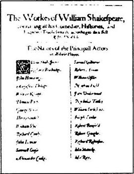
瘟疫流行过后的几年，我们一直忙个不停。市里又有了几家新剧团，如今威尔属于“宫内大臣剧团”。宫内大臣身居要职，与女王关系亲密。这样一来，我们经常有机会被召进女王的宫廷演戏，或者到英国达官显贵的府邸演戏。我们剧团不乏出色的演员。其中有威尔，理查·白贝芝，约翰·海明，奥古斯丁·菲利普斯，亨利·康德尔和托马斯·蒲伯。当然还有其他演员，只是这六个人是剧团的台柱。他们已经一起合作了20多年，也赚了不少的钱。
我仍为“宫内大臣剧团”做戏装和道具。约翰·海明说我是伦敦市里最出色的道具师。
威尔就不同凡响了——因为他会创作剧本。而且写出的剧本让人叫绝！他总能标新立异，与众不同，笔头又快，而且从不像有些作家那样创作雷同的剧本。
约翰·海明一直感到纳闷。“威尔，你怎会写得这么快？”他问道，“并且你从未出过差错，也从不修改。”
说实在的，威尔自己也说不清楚。“一切都已在我的头脑里。”他说，“我一想到，它们立刻就能跃然纸上。”
1595年他创作了一部爱情剧，讲述一对年轻的恋人，这就是《罗密欧与朱丽叶》。这是一出非常凄艳动人的悲剧，因为最终这对年轻的恋人双双殉情而死。该剧广受欢迎，观众百看不厌。
剧中威尔扮演朱丽叶的父亲老凯布。女主角朱丽叶由剧团一位少年扮演。因为当时没有女演员，所以剧中所有的女角色都由少年来扮演。当然，威尔在舞台上对情爱并没有多加渲染，都是通过台词——优美生动的台词使你置身于剧中而忘了台上女角色实际上是身着女装的少年。有些少年演员演技很好，年长后可继续上台扮演男角。
那年我们在里士满宫上演了《罗密欧与朱丽叶》。每逢圣诞节，我们常在女王御前演出。她爱看新剧，而且一出剧付我们10英镑。为了能将舞台及时搭好，我们经常得通宵达旦地工作，但圣诞节时能在女王宫廷内演出倒让人感觉是一件兴奋的事。宫廷内载歌载舞，大摆宴席，觥筹交错。有几年圣诞节11月便开始，一直热闹到次年二三月才结束。
1596年初风调雨顺，不料夏天天气很糟，潮湿阴冷，又遇连绵大雨，伦敦的瘟疫卷土重来，于是我们回到斯特拉福镇过夏天。威尔家中一时用不着我帮忙，当时他正忙于编写一部新剧本——《仲夏夜之梦》，于是我有几个星期去了汉普郡帮威尔料理羊毛生意。
八月的一个雨夜，我回到斯特拉福镇。亨里街的宅邸出奇地静，我便绕到后门径直到了威尔的房间——他的“写作室”，我们这样称呼。他正坐在那里，一动不动地只是呆坐着。
“出了什么事，威尔？”我问道，“其他人呢？”
“在教堂。”他脸色苍白，眼睛茫然呆滞。
“发生什么事了？”我问道，“到底怎么了？”
他望着我。“哈姆奈特……”，他开口说道，“上星期哈姆奈特病倒了，他……他昨天死了。他才11岁呀，托比，他死了。我的孩子。我唯一的儿子。托比，他死了，死了。”他双手掩面哭了。
发生这样的事你又能说什么来安慰他呢？我挨着他坐下，把手放在他的胳膊上，就这样并排静静地坐着。我知道威尔很疼爱这个儿子——他长着红色的头发，像一枚崭新的一便士硬币一样光彩夺目、生气勃勃，很像他父亲。
稍过片刻我说道：“你还会有儿子的。”
“安都40岁了，”威尔说这话时，声音充满倦怠，“自孪生子以后，她就没生孩子。”
“好啦，不用愁的，你还有两个可爱的女儿苏姗娜和珠迪丝。她们很快就会结婚的，然后，你就有数不清的外孙了。你瞧，到时，这些外孙们会在楼梯上跑上跑下围着你，亲热地叫他们的威尔外公。”
他戚戚地笑了一下，不过现在他的眼神不再那么茫然了。我心中一喜，顺势说道：
“你还有兄弟——吉尔伯特、理查和埃德蒙。他们也会有儿子的。莎士比亚家族绝不会无后的。想想整个家族吧，威尔，整个家族！”
他的确振作起来。尽管他已成为颇具名望的诗人和剧作家，但他也是一个关心家庭的人。翌年1597年，他为家庭购置了一座新住宅。这座叫作“新地方”的住宅就在斯特拉福镇中心，规模庞大且富丽堂皇，花了60英镑——一笔数目可观的钱——于是镇上的居民开始改口称他“莎士比亚先生”而不再叫“小威尔戏子”或“约翰·莎士比亚的儿子”，而且也乐意同他做生意，向他借钱。
安很高兴住进新房子。“新地方”莎士比亚先生的夫人，在斯特拉福镇自然算是一个体面人物，不过她依然不喜欢威尔从事的工作。
“演员都是些粗野、危险的人。”她常对他这么说，“对戏剧和戏院我毫无兴趣，对你干的事也懒得知道。”
她感兴趣的只是钱、新房子、新衣服——以及几年后买下的六座苹果园和斯特拉福镇北部的大农场。
威尔不再多提哈姆奈特，日子照样周而复始，威尔比以往更忙碌。但我知道他很怀念儿子，只不过把悲痛深埋在心里。一两年后，有一次我与约翰·海明商谈威尔的新剧本——《约翰王》的服装。约翰·海明是个家庭型的男人——他共有14个孩子。孩子们在家又叫又笑，东奔西跑，家里热闹得不得了……
约翰正在翻阅剧本。“托比，你瞧这段话，”他说道，“威尔分明在写他的儿子，是吗？”
我细细地回味这段话，眼前又浮现出八月那天威尔一双失神的眼睛。
“悲哀填满了我那不在跟前的孩子的房间。
躺在他的床上，陪着我到东到西，
装扮出他美妙的神情，复述着他的言语……”
理查·白贝芝也曾讲过，哈姆奈特死后，威尔的创作风格迥然不同。威尔照样在剧本上讥讽世人，但也对人们寄予无限的同情——同情全世界的人，不论好与坏、贫与富、长与幼。他塑造的人物是真实的。没有十全十美的好人，也没有十恶不赦的坏人。
《威尼斯商人》一剧就是最好的例证。剧中的夏洛克是个冷酷无情的放高利贷的人——每个人都憎恨他，但故事最终，当夏洛克倾家荡产之后，你又不得不起恻隐之心。他毕竟只是个可悲的老头。
或许理查说得对。要说世上还有谁了解威尔，也就是理查·白贝芝了。
7．Queens, Kings, and Princes
7
Queens, Kings, and Princes
Every year we took more and more plays to court at Christmas. In 1598 one of Will's plays was Henry Ⅳ. A lot of the play was about the King's son and his friend, Sir John Falstaff. Sir John was old, fat, lazy, drank too much, talked too much, laughed too much. But you had to love him. He was a great favourite with the London playgoers, and there were a lot of Falstaff jokes going round at the time.
After the play, the Queen wanted to speak to Will.
'Why? What have we done wrong?' John Heminges said to me in a very quiet voice.
'We'll find out in a minute,' I said.
We all watched while Will walked over to the Queen's chair. She was an old woman, she wore a red wig, and she had black teeth. But she was still a very great queen. And if the Queen was not pleased...
She had a good, strong voice—an actor's voice. We could hear her easily.
'Mr Shakespeare,' she began. Then she smiled, and suddenly you knew why all Englishmen loved the Queen. It was like the sun coming out on a spring morning.
'Mr Shakespeare, you are the best playwright in England. I enjoyed your play, and I thought that Sir John Falstaff was very funny. I have known many Englishmen like him. Will you write me another play? I would like to see Sir John in love.'
When Will came back to us, his eyes were bright, but he was already thinking about it.
'Don't talk to me,' he said. 'I've got a play to write.'
He wrote it in two weeks, and we took it down to Richmond Palace and played it before the Queen on February the 20th. She laughed and laughed at The Merry Wives of Windsor.
She didn't have much to laugh about in 1599. There was a lot of trouble in Ireland, and the Queen sent the Earl of Essex with 20,000 men to fight a war. Lord Southampton, Will's friend, went with him. All London came out on to the streets to watch when Essex and his men left for Ireland. Will wrote an exciting play about war that summer, and he put in a word or two about Ireland. That was Henry Ⅴ, about a very famous English King who fought a war in France.
But Essex was not Henry the Fifth. He didn't know how to fight a war, and he ran away back to England later that year. The Queen never spoke to him again.
In September we opened the Globe theatre. It was a grand, new building near the Rose. Will, Richard Burbage, and the others paid for it themselves. It was the best playhouse in London, and soon the most famous. The other companies had good theatres and some good actors, but we had the famous Richard Burbage—and the best plays.
We put on three new plays by Will in the next year, and some plays by other writers. One of the new playwrights was Ben Jonson. He was a clever man and he wrote clever plays, but people still liked Will's plays best. Ben couldn't understand it. He was always arguing with Will about how to write plays. He argued with everyone. He went to prison once because he killed a man in a fight. He was eight years younger than Will, but he and Will were very good friends.
Will's next play was Hamlet, Prince of Denmark. We all met one day in the Boar's Head to talk about it. There were six of us—me and Will, Richard Burbage, Henry Condell, John Heminges, and Augustine Phillips.
Will put his pile of papers on the table and sat down.
'Well,' he said. 'You've all read it. What do you think?'
'It's very good,' John Heminges began, 'but it's too long. It'll take about four hours in the theatre.'
'We don't have to use it all,' Will said. 'We can cut it down to three hours, perhaps two and a half.'
Henry Condell picked up one of the papers from the table. 'Look at this bit, when Ophelia is talking about Hamlet,' he said. 'Hamlet sounds like the Earl of Essex to me. Were you thinking of Essex when you wrote this?'
Will smiled. 'Perhaps,' he said. 'And perhaps not.'
'Richard will play Prince Hamlet, yes?' said Augustine.
'Of course!' Will said. 'I wrote the part for him. He's our star actor. I'll play the ghost of Hamlet's father.' He looked at me. 'Hamlet will wear black, Toby, and Ophelia will wear white.'
Henry finished his beer. 'It's a good story, Will, with good parts for us all. But will the playgoers like it? It moves very slowly, and they like a play to be fast and exciting. Prince Hamlet knows that his uncle Claudius murdered the king his father. But he doesn't do anything about it for a long time. He just talks about it. And in the end nearly everybody dies, one way or another.'
Augustine didn't agree with that. 'You haven't understood the play, Henry. It is exciting, very exciting. The play is inside Hamlet himself. He wants to kill his uncle, but he can't. Murder is wrong. But he must kill him, because of his father. We can all understand how he feels.'
All this time Richard Burbage was silent. He was reading bits of the play again. Now he put down the paper in his hand and looked up. His eyes were bright, excited.
'Have any of you really listened to the language of this play? This is your best play yet, Will—the best of them all. Just listen to the language, the poetry!' He stood up, and his great voice filled the room.
To be, or not to be—that is the question ...
We sat and listened, silently, while that wonderful voice brought the words to life. Will watched him, smiling. He knew that Richard, like him, was in love with words.
... To die, to sleep—
To sleep— perchance to dream. Ay, there's the rub.
For in that sleep of death what dreams may come
When we have shuffled off this mortal coil
Must give us pause.
Richard Burbage was right, of course. The people loved the play, they loved Burbage as Hamlet, they cried for poor Ophelia's death, and they shouted for the murderer Claudius to die. I think it was Will's most famous play.
Sir n. (a title used before the name of a knight or Baronet). （冠于男爵或男爵姓名之前的尊称）爵士。
lazy adj. disliking and avoiding activity or work. 懒惰的。
in a minute 一会儿。
wear v. (wore, worn) to have (esp. clothes) an the body. 穿；戴。
funny adj. amusing; causing laughter. 有趣可笑的。
Ireland n. 爱尔兰。
fight a war 征战。
leave for 离开去（某地）。
argue v. to disagree in words; fight with words. 争论。
Denmark 丹麦。
pile n. (infml) a lot （非正式）一大堆。
cut it down 删减。
ghost n. (the spirit of) a dead person who appears again. 幽灵。
murder v. to kill someone on purpose. 谋害。
agree with 同意。
feel v. to (be able to) experience sensations. 感觉。
be in love with sth. 迷恋某事。
perchance adv. perhaps. 也许。
rub n. the difficulty or cause of trouble （in the phr. 用于There's the rub短语中）困难；障碍。
shuffle v. to walk by dragging slowly along. 曳（足）。
mortal adj. of human beings. 人生的。
coil n. 盘绕物。
pause n. a short but noticeable break (in activity). 停顿。
女王、国王和王子们
7 女王、国王和王子们

每年圣诞节我们要安排愈来愈多的戏剧进宫演出。1598年上演了威尔的一部历史剧《亨利四世》。剧中大多描写亨利四世之子和他的朋友约翰·福斯泰夫爵士两人。约翰爵士已是垂暮之年，身体肥胖，游手好闲，只会酗酒聊天、寻欢作乐，但这个角色挺招人喜欢。他一度成为最受伦敦戏迷欢迎的人物，那时街头巷尾到处流传着关于福斯泰夫的种种笑料。
演完戏后，女王传令召见威尔。
“怎么啦？我们是否做错事啦？”约翰·海明轻声问我。
“我们一会儿就知道了。”我说道。
我们目不转睛地看着威尔走到女王的座椅前。女王年事已高，戴着红色假发，一口黑齿，但她仍旧是一个伟大的女王。如果女王一不高兴……
女王天生一副演员般的好嗓子，铿锵有力，我们可以很容易地听到她讲话。
“莎士比亚先生，”她开口说道，接着启齿一笑，这微笑犹如春天早晨的旭日，我恍然明白，为什么全英国人民如此爱戴女王。
“莎士比亚先生，你的确是英国最杰出的剧作家，我非常欣赏你这部戏剧。我觉得剧中的约翰·福斯泰夫非常滑稽诙谐，我认识不少这样的英国人。你能否为我另外写一部喜剧？我想看看福斯泰夫谈情说爱。”
威尔回到了我们身边，双眼闪闪发亮，看得出他已在构思了。
“暂且别来找我说话，”他说道，“我得着手写一部戏。”
两星期后他就把剧本赶写了出来。2月20日我们便到里士满宫为女王演出此剧《温莎的风流娘儿们》，逗得女王开怀大笑。
但1599年就没多少事能令她开心了。爱尔兰经常发生动乱，女王派遣爱塞克斯伯爵率兵2万去征战，随同出征的还有威尔的好友索桑普敦勋爵。当爱塞克斯率兵出征爱尔兰时，所有的伦敦市民都走上街头夹道欢送。那年夏天，威尔写了一部关于战争的鼓舞斗志的历史剧《亨利五世》，其中有一两处提到了爱尔兰的动乱。这部历史剧描绘了一位在法国征战的功名显赫的英国君主的形象。
爱塞克斯毕竟不是亨利五世，他压根儿不懂如何作战，不久就逃回英国，女王也从此不再理他。
9月我们开放“环球剧院”。这座富丽堂皇的新剧院紧邻“玫瑰剧院”，由威尔、理查·白贝芝和其他股东出资建成，是伦敦当时最好的一座剧院，不久就成为最负盛名的剧院。尽管其他剧团的剧院设备和演员配备都不错，但是我们有著名的理查·白贝芝和最好的剧本。
第二年我们上演了威尔的三部新剧本和其他剧作家创作的一些剧本。其中一位剧作家就是刚出道的本·琼生。这人机智聪明，剧本也写得好，但人们还是最推崇威尔的作品。本不能理解这一点，他时常和威尔就如何创作剧本而争论不休，不过这人就爱与别人辩论。有一次他因决斗杀了人，蹲了监狱。他比威尔小八岁，但两人是很好的朋友。
威尔的又一部剧是《丹麦王子哈姆雷特》。一天，我、威尔、理查·白贝芝、亨利·康德尔、约翰·海明和奥古斯丁·菲利普六个人一起聚在公猪头酒吧讨论剧本。
威尔将那堆手稿放在桌上，坐了下来。
“好吧，”他说，“剧本大家都看了，谈谈看法吧？”
“内容很好，”约翰·海明带头说道，“不过剧情太长，在剧院上演要演四个多小时。”
“我们并不需要全部剧情，”威尔说，“我们可以将剧本删减到三个小时，或者两个半小时也行。”
亨利·康德尔从桌上拿起一张手稿：“看这一段，奥菲莉亚谈论哈姆雷特，”他说道，“我感觉剧中的哈姆雷特酷似爱塞克斯伯爵。你在写这段时是否想到爱塞克斯呢？”
威尔笑了起来。“或许有，”他说道，“或许没有。”
“理查扮演哈姆雷特王子，对吧？”奥古斯丁说。
“那当然啦！”威尔说道，“这个角色专为他而写的。他是我们剧团的明星。我将扮演哈姆雷特父亲的幽灵。”他看看我，又说，“托比，哈姆雷特要穿黑衣服，而奥菲莉亚要穿白色的衣服。”
亨利喝干了啤酒。“这故事不错，威尔，对所有的人来说都不错。不过，剧情进展太慢，观众会喜欢吗？他们喜欢剧情进展快而令人振奋的戏剧。哈姆雷特王子明知道叔父克劳迪厄斯杀了他的父王，但他长时间只是用空话泄气，却没有采取任何行动，再说故事最终人物几乎都这样或那样地死去了。”
奥古斯丁并不同意这看法。“亨利，你还未真正理解这部戏，它会令人振奋不已的。这部戏就在于哈姆雷特的内心活动。他想杀死叔父，但却不能。谋杀是罪恶的，可他为了父王又必须杀死他。我们完全可以理解他的感受。”
理查·白贝芝一直一言不发。他重新看了看剧本的部分章节，然后放下手中的稿纸，抬起头，双眼奕奕放光、洋溢着兴奋之情。
“你们当中有谁真正领会剧中的语言呢？威尔，这是你写的最好的剧本了——所有戏剧中最好的一部。听听剧中的语言，剧中的诗歌吧！”他站起来，顿时整个房间回荡起他雄厚的嗓音。
“活着还是死亡，这是个问题……”
我们默默地坐着，倾听那绝妙的声音将纸上的文字赋予了生命。威尔望着他，会意地微笑着。他知道，只有理查能如他一样，深深地迷恋着语言的妙处。
“……死亡，就是睡眠——
睡眠——也许要做梦，这就麻烦了。
我们摆脱了尘世的牵缠，
在死的睡眠里，会做些什么梦呢？
一想到就不能不踌躇。”
理查真的说对了。观众迷上了这部悲剧，他们迷上了白贝芝扮演的哈姆雷特，他们为可怜的奥菲莉亚的死而哭泣，他们怒吼着让凶手克劳迪厄斯死去。我认为这的确是威尔最负盛名的戏剧。
8．A Scottish King for England
8
A Scottish King for England
Will's father died in September 1601. In his last years John Shakespeare was a happy man. His son was famous, and the Shakespeare family was important again in Stratford. But there weren't many children in the family. Will's sister Joan was married and had a little boy, but Will's brothers didn't have any children.
Susanna, Will's older daughter, was now eighteen, and Will said to her one day:
'We must find you a husband soon, Susanna.'
But Susanna shook her head. 'Oh, I don't want to be married, Father, thank you.'
We all smiled at that, because there was already a young man who was often a visitor at New Place. That was John Hall, a clever young doctor. Will liked him.
Back in London, the theatres were always full, and actors were now important people in the city. Will and I were now living in very fine lodgings in Silver Street, with the Mountjoy family. The Globe and the Lord Chamberlain's Men were doing very well, and the older actors in the company were making money, and buying houses and land. But some people still thought that actors were dangerous, wicked people.
Then Queen Elizabeth died, on the 24th of March 1603, at Richmond. I remember the day well. The theatres were closed —you can't have plays when a queen is dying—and we were all at Henry Condell's house. He and John Heminges lived very near our lodgings in Cripplegate.
We were all very worried. The new King of England was James the First. He was already King of Scotland, and he had a young wife, Queen Anne of Denmark, and three young children. But what was he like? Would he be a good king? And, most importantly, did he like plays?
'If King James doesn't like plays,' said Henry Condell, 'we're finished. There are already a lot of Puritans on the London City Council, and they'd love to close the theatres down.'
Henry always looked at the black side of everything.
'Well, he's written a lot of books himself,' said Will. 'Perhaps he'll be interested in plays, too. We'll just have to wait and see.'
We didn't have to wait long. On the 19th of May I was underneath the stage in the Globe. I was trying to mend a broken door in the floor of the stage. We used this door when a ghost came on or went off in a cloud of smoke. Suddenly, I heard feet running across the stage. I looked up through the hole, and saw Will and John Heminges and Richard Burbage. They were all very excited.
'Listen to this, Toby,' said Will. He was holding a piece of paper in his hand. 'It's a letter from King James! From today, we are the King's Men! We're working for the King himself, and he wants to see all the plays.'
'We're going to have new red coats to wear when we go to court,' Richard said.
'And,' John said, 'he's going to pay us ￡20 for every play at court. What do you think about that, Toby?'
We were all laughing and smiling now. 'Well, John,' I said. 'If we're so rich, can I have a new door? I can't mend this one again—it's too old.'
That summer the plague came back. By July a thousand people were dying every week in London. One of them was the little son of Will's friend, Ben Jonson. By the end of the year there were 33,000 dead in England. The theatres closed, and the King's Men went on tour.
Will and I spent the summer at Stratford. When Christmas came, the King's Men put on a lot of plays at court. The King was at Hampton Court Palace that year, which was outside London, well away from the plague. I couldn't go because I fell off my horse one day and broke my leg. Stupid thing to do! I had to stay at home, but Will told me all about it when he came back.
'The new King and Queen like to enjoy themselves, Toby,' he said. 'They're a happy family. Prince Henry, who's nine, is very a nice little boy, and his sister Elizabeth is beautiful. Little Prince Charles is only two.' He was silent for a minute. Perhaps he was thinking about Hamnet. Then he went on, 'Queen Anne likes plays very much. She likes music and dancing, too—she showed her legs in one dance!'
'My word!' I said. 'Things like that never happened at court in Queen Elizabeth's days.'
'We live in different times, Toby. A lot of things are going to change.'
But change only comes slowly. The King's Men went from one success to another. At the King's court at Christmas 1604, there were twenty-two plays, and eight of them were Will's. In 1605 there were thirteen plays at court—and ten of them were Will's.
We always did the plays at the Globe first, before we took them to court. Will was writing more slowly now, but during these years he wrote some of his best plays: Othello, Macbeth, and King Lear. That was a sad, dark play. When King Lear carried his dead daughter Cordelia on to the stage... Well, every man, woman, and child in the Globe was crying. It's true. Richard Burbage played Lear, of course. What an actor he was!
Scottish adj. 苏格兰的。
shake one's head 摇头。
silver n. 银子。
Scotland n. 苏格兰。
the black side of everything 事物的阴暗面。
underneath prep. under (something). 在……下面。
mend v. to repair (a hole, break, etc.) in (something). 修补。
a cloud of smoke 一团烟雾
by the end of the year 到年底。
fall off v. （从……）跌落。
break one's leg 摔断了某人的腿。
My word! (an expression of surprise). 我的天呀！（表惊讶）。
times n. a period in history 时代。
success n. a person or thing that succeeds or has succeeded. 成功之人或事物。
carry v. to bear (someone or something) in one's arms. 抱着。
苏格兰来的英国国王
8 苏格兰来的英国国王
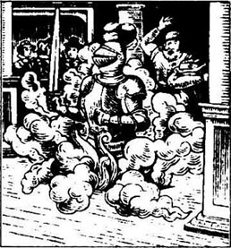
1601年9月威尔的父亲过世了。约翰·莎士比亚安然愉快地度过了生命的最后几年。他的儿子出了名，自然莎士比亚家族在斯特拉福镇又风光起来。只是这个家族子嗣不多，威尔的妹妹琼结婚后只生了一个小男孩，而威尔的几个兄弟都后继无人。
如今，威尔的大女儿，苏姗娜已是一个十八岁的大姑娘。一天，威尔问她：
“苏姗娜，我们很快该给你物色丈夫啦。”
苏姗娜摇摇头，“哦，我还不想结婚呢，爸爸，谢谢你。”
我们会意地笑了起来，其实有个青年早已成为“新地方”的常客。他叫约翰·霍尔，是个聪明的青年医生。威尔很喜欢他。
再回到伦敦，形势已明显好转，剧院经常爆满，演员在市里已成为新贵。威尔和我住进了银街的豪华居所，同住的是芒特乔伊家。“环球剧院”和“宫内大臣剧院”事业兴隆，剧团中老资格的演员赚了钱，开始买地置产。不过，还有少数人始终认为演员既危险又龌龊。
1603年3月24日，伊丽莎白女王死于里士满宫。我对这天记忆犹新，各家剧院关门息演——女王快要驾崩时，是不许演出的——于是大家都聚到亨利·康德尔家。他和约翰·海明就住在我们住地附近的“克里普勒门”大街。
大家都忧心忡忡。新继位的英国国王是詹姆士一世。他已经是苏格兰国王了，年轻的妻子是来自丹麦的安妮王后，膝下有三个孩子。不知这国王为人怎么样？他是不是位好国王呢？最重要的是，他是否爱看戏？
“万一詹姆士国王不爱看戏，”亨利·康德尔说道，“那我们全完了。伦敦市政参议会中有许多清教徒，他们巴不得关闭剧院呢。”
亨利总是想到事情的阴暗面。
“然而，国王他自己也曾写过许多书，”威尔说，“或许他也会对戏剧感兴趣的。我们只能等着瞧。”
我们并没等多久。5月19日，我正在“环球剧院”的舞台下面修理舞台场地的一扇破门，这扇门是演出时，让幽灵驾着一团烟雾进出用的。突然，我听到一阵脚步声跑过舞台，透过洞眼，向上一看，原来是威尔、约翰·海明和理查·白贝芝，他们欣喜若狂。
“听着，托比，”威尔手中攥着一张纸条说道，“这是詹姆士国王的亲笔信。从今天起，我们属于‘国王剧团’，要专为国王陛下服务，他想看我们所有的戏剧的演出。”
“进宫演出时，我们将穿上新的红色大衣。”理查说。
“还有，”约翰说，“宫里演出费每场20英磅。托比，你觉得这事怎么样？”
这回我们都开怀大笑。“嗨，约翰，”我说道，“要是我们有了钱，能给我买一扇新门吗？这扇破门再也不能修了——它太旧了。”
那年夏天，瘟疫卷土重来。到7月，伦敦每星期都有上千人濒临死亡。其中就有威尔好友本·琼生的小儿子。时至年底，英国有3万3千人死于瘟疫。剧院被封，“国王剧团”开始巡回演戏。
那年夏天，威尔和我返回斯特拉福镇。到圣诞节来临时，“国王剧团”入宫演出了很多出戏。那年，国王到伦敦境外的汉普敦宫躲避瘟疫。由于我不幸落马摔断腿而不能入宫。真是倒霉！我只得待在家里，不过，威尔一回来就会告诉我入宫演出的情况：
“托比，新国王和王后真懂得生活，”他说道，“他们家庭幸福美满，亨利王子，9岁，是个招人喜爱的小男孩，女儿伊丽莎白公主长相姣好，还有一个才两岁的查尔斯小王子。”他沉默了片刻，或许又想起爱子哈姆奈特。然后他继续说道，“安妮王后非常爱看戏，还喜爱音乐和舞蹈——一次舞会中居然露出双腿呢！”
“真没想到！”我说，“伊丽莎白女王在位时，宫中从未发生过这种事呀！”
“我们已生活在不同的时代了，托比。许多事都将不断变化。”
但变化只是姗姗而来。“国王剧团”一次又一次取得成功。1604年圣诞节，室宫内共上演了22部戏剧，其中八部是威尔的剧本。1605年，宫中演出了13部戏剧——10都是威尔的剧本。
入宫演出前，我们通常先在“环球剧院”试演。尽管威尔创作速度已不如当年，但这些年间，他却创作了一些最为出色的剧本——《奥赛罗》、《麦克白》和《李尔王》。《李尔王》是一部格调低沉的悲剧。当李尔王抱着死去的女儿考迪莉亚走上舞台时，“环球剧院”内不论男女老少都失声痛哭。这可一点不假。当然，还是由理查·白贝芝扮演李尔王，他真是一个了不起的演员！
9．The Mermaid Tavern
9
The Mermaid Tavern
During the next few years the plague was always with us. Some years it was bad, other years not so bad. When the theatres in London closed, we went on tour. Well, the King's Men did. Will and I were mostly at home in Stratford in the summers. Will was usually writing, and I did bits of business for him when I could.
Susanna married Dr John Hall in June, 1607, and Will's granddaughter Elizabeth was born in February the next year. We had a very cold winter that year. The river Thames in London froze right up to Westminster. People had parties and cooked sheep over fires on the ice.
Will's brother Edmund died that winter—he was only twenty-seven—and Will's mother died in September the next year.
Will was writing a different kind of play at this time. John Heminges said they were dark, cruel plays, and that Will was only looking at the black side of people. But that was the thing about Will. He was still changing, trying new kinds of poetry and stories in his plays all the time. And suddenly, there was a new kind of play, full of laughing and spring flowers and love: The Winter's Tale.
When we were in London, we often went in the evenings to the Mermaid Tavern in Cheapside. It was a very good inn, with good beer, and all the writers and poets in London went there.
We were there one evening in the winter of 1610, I think it was. A lot of Will's friends were there—actors, writers. Ben Jonson was there, of course. He was a great drinker all his life. He was writing a lot of plays now and was doing very well. But he never had any money—Will always paid for the beer.
At first, the talk was all about King James and his court. We didn't like the King so much now—he was more interested in horses than in plays. Then Ben remembered something about The Winter's Tale. He knew, really, that Will's plays were the best, but he always liked to find mistakes if he could.
'Now, why did you put Bohemia by the sea, Will?' he said. 'Bohemia's in the middle of Europe! There's no sea for a hundred miles, you stupid man!'
'Your plays are very clever, Ben,' Richard Burbage said, 'but they smell of the schoolbook, don't they, Will?'
Will laughed. 'How many people are going to worry about that, Ben? What does it matter? They liked the play at court. The Queen said it was a very sweet play, and the King —'
'The King!' Ben said loudly. His face was red and angry. King James sometimes fell asleep during Ben's plays. 'The King,' he went on excitedly, 'is a very stupid man! I told him, I said it to his face: "Sir, you don't understand poetry!" '
John Heminges laughed. 'Oh my word!' he said. 'What a terrible man you are, Ben! I don't know how you've lived so long!'
Will laughed too, but he said, 'Ben, you must be careful. You don't want the King to be your enemy. Don't forget that he pays twice as much as Queen Elizabeth did—and sees twice as many plays.'
'Money?' shouted Ben. He loved to argue about anything. 'We're poets and actors, not businessmen! What does money matter?'
'It puts bread and meat in your stomach, and a coat on your back,' said Will, drinking his beer. 'And you're the first to shout if you haven't got any money.'
Ben banged his beer glass on the table. 'Now listen, Mr William Shakespeare of Stratford, with your fine big house and your expensive horses, you wrote in your play King Lear that money was—'
'Oh, do stop it, you two!' John Heminges said. He turned to talk to me, but a few minutes later Ben was arguing about another of Will's plays.
'And what about Antony and Cleopatra? What kind of writing is that? You never know which place you're in! One minute you're in Egypt, the next minute you're in Rome, then you're at sea on a ship, then back in Egypt again—'
Richard Burbage didn't like that. 'You're wrong again, Ben. It's only you who can't follow the play. You think Londoners are stupid, but they understand more than you do! And another thing...'
I decided to go home to bed. Ben's a fine man, but he does talk so much. He goes on and on. When I left, he was calling for more beer. I knew they would be there in the Mermaid for most of the night.
mermaid n. (in stories) a young and usu. attractive woman with the bottom half of her body like a fish's tail. （故事中的）美人鱼。
tavern n. (old use) an inn. （旧用法）客栈。
freeze (froze, frozen) v. to be very cold (when water changes to ice). 冷冻，结冰。
tale n. a story of imaginary events. 故事。
Europe n. 欧洲。
sweet adj. gentle or attractive in manner. 甜蜜的。
fall asleep to go into a state of sleep. 入睡。
businessman n. a man engaged in business. 生意人，商人。
stomach n. a baglike organ in the body where food is digested after being eaten. 胃。
bang v. (to cause to) knock, often with a loud noise. （使）重击。
Rome 罗马。
美人鱼酒店
9 美人鱼酒店
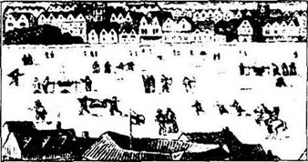
随后的几年里，瘟疫流行不断，有些年份情况很糟，有些年份要好一些。只要伦敦市内剧院关门停业，我们就巡回演出。当然，国王剧团一直这么做。威尔和我夏天多半呆在斯特拉福镇的家中。威尔通常搞创作，而我则尽可能帮助他打理零碎的生意。
1607年6月，苏姗娜嫁给约翰·霍尔医生。翌年2月威尔的外孙女伊丽莎白出世。那年冬天，天寒地冻，泰晤士河伦敦河段到西敏斯特河段大面积结冰。人们就在冰上举行盛会，还生起篝火烤羊吃。
那年冬天，威尔的弟弟埃德蒙去世——年仅27岁——第二年9月，威尔的母亲又过世了。
这一时期，威尔创作风格大有变化。约翰·海明说威尔只看到人们丑陋的一面，使得戏剧带上沉郁、残暴的色彩。不过，威尔就是这样。他的创作风格一直在变，不断尝试在戏剧中运用新格调的诗歌和故事。突如其来地，他又创作出一部新剧本《冬天的故事》，这部戏剧充满欢笑、春天的鲜花和爱情。
在伦敦时，我们晚上经常到切普塞特街的美人鱼酒店。这家酒店环境舒适，备有好酒，是伦敦文人墨客聚会喝酒的好去处。
1610年冬天的一个晚上，我们来到这家酒店，我记得没错。威尔的许多朋友——演员和剧作家都在场，当然也少不了平生很能喝酒的本·琼生。虽然他创作了大量的剧本，也小有名气，但他还是身无分文——连喝啤酒的钱通常都要威尔掏腰包。
开始的时候，话题总是围绕着詹姆士国王和他的宫廷大臣。说实在的，我们现在不大喜欢这位国王了——他爱看赛马已胜过爱看戏。这时，本想起《冬天的故事》剧本中的一些情节。尽管他确实承认威尔的戏剧是最优秀的，不过，他就喜欢鸡蛋里挑骨头。
“嗨，威尔，你怎么把波希米亚这地方说成是在海边呢？”他说道，“波希米亚可是在欧洲中部呀！方圆一百英里以内根本就没有海，你真糊涂！”
“本，你创作的剧本确实不糊涂，”理查·白贝芝说，“不过太书卷气，威尔，你说呢？”
威尔笑道：“本，会有几个人去深究那些细节呢？这有什么关系呢？宫里的人们喜欢这部戏。王后说，这部戏剧很甜蜜，而国王——”
“国王！”本大嚷起来，脸气得发红。因为詹姆士国王看本的戏剧有时打瞌睡。“国王，”他仍然很激动，“简直笨得透顶！我曾告诉他，当面对他说过：‘陛下，你压根儿不懂诗歌！’”
约翰·海明听了此话大笑。“噢，真没想到！”他说，“本，你真是无可救药！我真不知道你怎么还能活这么长命！”
威尔也笑了起来，但他说道：“本，你可要小心呀。你不想与国王为敌吧！别忘了，国王付的报酬是伊丽莎白女王的两倍——看的戏也是她的两倍。”
“钱？”本大叫起来，他很爱争论事情。“我们是诗人，是演员，不是生意人！钱有什么用？”
“钱可以使你有面包和肉果腹，有衣穿，”威尔喝了一口啤酒，说道，“要是没钱的话，你会第一个破口大骂的！”
本把啤酒杯砰地放在桌上。“现在听着，斯特拉福镇的威尔·莎士比亚先生，你不就拥有堂皇的居宅，高价的马匹吗？你在《李尔王》一剧中不是写道钱是——”
“啾，你们两个都住嘴吧！”约翰·海明劝道，然后便转身和我谈话。不过几分钟后，本又在评论威尔的另一部戏剧。
“《安东尼与克娄巴佩特拉》这部剧怎么样？到底写些什么呀？你根本就不知道自己待在何处！一会儿在埃及，一会儿在罗马，接着坐船在海上，然后又回到埃及——”
理查·白贝芝渐生厌恶之情。“本，你又搞错了，只有你才不懂这部戏。你认为伦敦人都傻乎乎的，他们可比你清楚得多。还有……”
我还是决定回家睡觉。本是个好人，但是他的确话太多了。他讲得没完没了。在我离开时，他又要了一些啤酒。我知道他们肯定又会在酒店待上多半夜。
10．Back to Stratford
10
Back to Stratford
'You're losing your hair, Will,' I said to him one day.
'We're both getting old, Toby,' he said. 'There's no escape from it. Old and tired.'
'Don't talk like that,' I said. 'You're only forty-seven. There's still some life in you yet. And another twenty plays!'
'No,' he said slowly. 'No, I think the poetry is nearly finished. I'm getting tired, Toby. I need a rest. I think The Tem pest is going to be my last play. I'm saying goodbye to the stage. Times are changing, and people want a different kind of play now. There are lots of new, younger writers, who know how to please the playgoer. I'm not modern anymore.'
He never usually talked like this, and I didn't like it.
'There's only one Will Shakespeare,' I said, 'and he'll always be modern. Now, I must get on. I've got to go out and buy all the cloth for the new costumes in The Tempest. Why did you have to put it on an island? When the ship goes down, the actors all have to come on stage in wet clothes. It takes a day to dry the costumes, so that means two lots of clothes for everyone—wet and dry!'
That brought him back to life. 'Can't you read?' he said crossly. 'If you look at Gonzalo's words in Act 2, Toby, you'll see that it's a magic island—and their clothes stay dry all the time. So they'll only need one lot.'
I laughed, and then he laughed too.
But it was true, he was tired. I could see it, and others could see it too. But the company was always wanting new plays, and we had two theatres now. There was the Globe, and now we had the Blackfriars theatre. Plays in the Globe were in the open air and always had to be in daylight, but the Blackfriars was a building with a roof. We could put on plays in the evenings and in any weather. It also made more money, because every playgoer had a seat and paid a shilling for it. In the Globe they paid a penny to stand.
In February 1612 Will's brother Gilbert died in London, and just a year later his brother Richard died in Stratford. That was in February, too. Will was the oldest brother, and he was the only one still alive. We spent most of our time in Stratford these days. Will didn't act in plays now. He went to rehearsals for his new plays, of course, but he was always happy to hurry home again.
We were riding back to Stratford in the spring of 1613 and stopped for the night at the Crown Inn in Oxford. Will was very friendly with the landlord John Davenant and his wife Jane. The next morning, when we left, their little son, William, came running out to say goodbye to his good friend Mr Shakespeare. He was a bright boy, about seven years old, with much the same colour hair and eyes as Will. Will talked with him for a few minutes, then gave him a penny.
Later, when we were riding along the road, I said, 'The last time we were in Oxford, I heard some talk in the town. Someone said that you were the father of Jane Davenant's son.'
Will laughed. 'Well, well,' he said, 'People say that, do they? What will they say next?'
'Jane's a nice-looking woman.' I looked at him out of the corner of my eye. 'Isn't she?'
'Come on, Toby. You know that Jane is a good wife to John.' He was still smiling. 'You mustn't listen to stories like that.'
I never believed that story myself. But many years after Will died, William Davenant told a lot of people that he was Shakespeare's son. But how did he know? His mother wouldn't tell him!
Will was happy to get home, to see his daughters and John Hall, and little Elizabeth, who was just five then. He was happy to see Anne, I think. He never said much to her, nor she to him. But after more than thirty years together, you've already said everything, haven't you?
I think Judith was Will's favourite daughter. Susanna was brighter and cleverer, but Judith was Hamnet's twin, and Will still remembered his son. He wanted a son, or a grandson, so much. Judith was twenty-eight now, and still no husband. But Will told her not to hurry. She must find the right man first.
Will worked hard all his life, and I think it was all for his family. I remember some lines from his play The Tempest, when Prospero is talking to his daughter Miranda.
I have done nothing but in care of thee,
Of thee, my dear one, thee my daughter ...
tempest n. a violent storm. （文语）暴风雨。
say goodbye to 向……告别。
go down 下沉。
crossly adv. angrily. 生气地。
magic adj. when strange and wonderful things happen. 有奇异魔力的。
in the open air. 露天。
roof n. the outside covering on top of a building. 屋顶。
shilling n. a coin in old English money (about 5p in new English money). 先令。
landlord n. a person, esp. a man, who runs a rooming house or an inn; an innkeeper. 房东，客栈店主。
penny n. (in Great Britain before 1971) a bronze coin, 12 of which made a Shilling. （1971年以前之大不列颠）便士（12便士等于1先令）。
look at sb. out of the corner of one's eye （某人）用眼角看（某人）。
right adj. most suitable. 合适的。
退居斯特拉福镇
10 退居斯特拉福镇

“威尔，你掉头发啦。”一天，我对他说道。
“我们俩都老了，托比，”他说，“谁也躲避不了衰老和疲惫。”
“别这么说，”我说，“你才47岁，日子还长着呢，还可以再写20部戏剧！”
“难啦，”他缓缓说道，“难啦，我发觉自己已是江郎才尽，我也感觉累了，托比。我需要休息。我想《暴风雨》将是我最后一部戏剧。我要和舞台告别啦。时代在变化，人们现在需要看些不同风格的戏剧。更何况纷纷涌现出一批年轻的新剧作家，他们懂得如何博得戏迷的欢心。我再也跟不上时代了。”
他从来不曾这样说过，我也不爱听。
“世上只有一位威廉·莎士比亚，”我说，“他永远跟得上时代。好啦，该干活了，我得出去购置《暴风雨》一剧新服装的布料。你为什么要让故事发生在一个荒岛上呢？轮船下沉后，演员们只能穿着湿漉漉的衣服回到舞台。衣服要花一天的时间才能晒干，这就意味着每人都得准备两套衣服——一件湿衣服和一件干衣服。”
这番话使他又恢复了生机。“你看不懂吗？”他忿忿地说，“托比，你若是看了第二幕贡柴罗那段话，你会知道那是一座魔岛——他们的衣服一直是干的，所以只需准备一套衣服。”
我笑了，接着他也笑了。
但事实的确这样，他累了。我看得出来，别人也看得出来。不过，剧团总需要新剧上演，况且我们现在有两个剧院：“环球剧院”和“黑修士剧院”。“环球剧院”是露天剧院，戏剧通常只能白天演。“黑修士剧院”是有屋顶的剧院，戏剧可以在晚上以及随便什么天气上演，钱也赚得更多，因为每个观众花一先令可以有一个座位，但在“环球剧院”，观众花一便士站着看。
1612年2月，威尔的弟弟吉尔伯特死于伦敦。一年后，也在2月份，他弟弟理查死于斯特拉福镇。威尔是家中的长子，而且是唯一一个还活在世上的。这些日子，我们多半待在斯特拉福镇。威尔不再上台演戏，不过他肯定赶去看新剧本的预演，然后，兴致勃勃地赶回家。
1613年春，我们骑马回斯特拉福镇，途中在牛津的“皇冠客栈”寄宿。威尔对客栈老板约翰·达文南特和他妻子简非常友善。第二天早要离开时，他们的小儿子威廉跑出来向他的好朋友莎士比亚先生告别。这小孩聪明伶俐，大约7岁，发色和眼睛酷似威尔。威尔和他聊了几分钟，然后送给他一便士作纪念。
当我们策马上路之后，我说道：“我们上次在牛津时，我在镇上听到一些闲话。有人说你是简·达文南特儿子的父亲。”
威尔大笑。“是吗，是吗，”他说，“人们这么说的，是吗？他们还会说什么呢？”
“简长得美丽动人，”我用眼角看看他，“不是吗？”
“好啦，托比。简是约翰的贤妻，你知道的。”他仍然微笑着。“你千万不能听信谣言。”
我才不会相信。但威尔死后的许多年后，威廉·达文南特却告诉许多人，他是莎士比亚的儿子。他又怎么知道的呢？他母亲绝不会告诉他。
威尔很高兴回家看望女儿和女婿约翰·豪尔以及才5岁的小伊丽莎白。我想他也高兴见到安。他从没对她多说几句话，她也一样。但是30多年的相处，该说的早已说过，不是吗？
我觉得威尔最宠爱珠迪丝，尽管苏姗娜更聪明伶俐，但是珠迪丝是哈姆奈特的孪生妹妹，威尔仍在怀念爱子，他太想有个儿子或外孙了。珠迪丝现在28岁，尚未婚嫁，但威尔劝她不必急，首先得找到中意的人。
威尔一生勤奋工作，我想，这全都是为了这个家。我还记得在《暴风雨》一剧中，普洛斯彼罗对女儿米兰达讲的那几句话：
凡我所做的事，无非是为你打算，
为了你，我的宝贝，我的女儿……
11．The last years
11
The last years
Will did write another play, of course. That was Henry Ⅷ and he wrote it because the King's daughter, Princess Elizabeth, was getting married. The King's Men had to have a new play for a special day like that.
We were in London for rehearsals at the Globe, and the actors put on the new play for the first time on the 29th of June, 1613. I remember the date well.
It happened soon after the play began. Richard Burbage was on stage and he suddenly looked up and stopped in the middle of a word.
'Fire!' he shouted. 'The theatre's on fire!'
Wooden buildings burn fast, and Henry Condell shouted, 'Everybody out! Quickly!'
The crowd of playgoers began to hurry to the doors, and I ran round to open them. We could all see the smoke now, and John Heminges shouted to Will, 'The playbooks! We must get the playbooks out!'
Everybody got out and no one was hurt. One man's coat caught fire and his friend put the fire out with a bottle of beer. But the Globe burnt right down to the ground in an hour. Poor old John Heminges just stood there and cried.
But you can't kill a theatre that easily. A year later there was a new Globe in the same place. Bigger and better than the old one. People said it was the finest playhouse in England.
We didn't often go to London in those last years. Will was happy at home in Stratford with his family. He had time for his garden, time to talk to his Stratford friends, time to play with his granddaughter Elizabeth. He read his plays again, and he and I talked and laughed about the old days.
Judith got married at last in February 1616. She was thirty-one then, and married a man called Thomas Quiney, who was twenty-six. Will wasn't too happy about it.
'Judith loves him very much,' he said quietly to me. 'But I'm not sure about him. I think she's making a mistake.'
He was right, of course. Will was usually right about people. Thomas Quiney was lazy, drank too much, and went with other women.
But Will didn't live to find that out. In March he went to London for a party at the Mermaid Tavern. Ben Jonson was now the playwright for the court of King James. The King was paying him some money every year, and Ben wanted to give a party for his friends.
It was a good party, I heard. But Will caught a fever and then rode home through the cold spring rain. When he got back to New Place, he was not a well man.
He died on the 23rd of April, in the year 1616.
They put his body in Holy Trinity Church, down by the river Avon. It was a bright, windy day, I remember. Ben Jonson came down from London, and cried in the church. He was a wild man, was Ben, always fighting and arguing about plays and poetry. But he loved his friend. He came up to me outside the church.
'Toby,' he said. 'Will was a good, true man, and I loved him. We'll never see another poet like him in England.'
wooden adj. made of wood. 木制的。
burn v. to be on fire. 燃烧。
drunk too much 纵酒。
well adj. in good health. （指身体）很好。
holy adj. of God and religion. 神圣的。
Trinity n. (in the christian religion) the union of the 3 forms of God (the Father, Son and Holy spirit) as one God. 三位一体（指基督教中，天父、耶稣、圣灵合成一体）。
windy adj. with a lot of wind. 有风的。
退隐的晚年
11 退隐的晚年
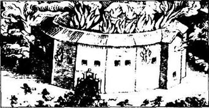
威尔又写了一部戏剧《亨利八世》。此剧是为了庆祝国王之女伊丽莎白公主结婚大典而写的。像这样特殊的日子，“国王剧团”是一定要推出一部新剧本的。
1613年6月29日，在伦敦的“环球剧院”，我们首次登台预演这一新剧。这个日子我记得一清二楚。
演出开始不久，意外事故就发生了。理查·白贝芝正在台上演出。突然，他抬起头，台词说到一半就停住了。
“着火啦！”他大嚷起来，“剧院着火啦！”
木制的房子火势蔓延很快，于是亨利·康德尔大叫着：“大家赶快出去！快！”
看戏的人群开始拼命向门口挤，我赶紧打开所有大门疏散人群。这时我们都能看见烟雾弥漫，约翰·海明对威尔喊道，“那些剧本！我们必须把剧本抢出来！”
最后大家都安然无恙地脱险。有人衣服着了火，但他朋友用一瓶啤酒就给浇灭了。不过“环球剧院”一小时后全部烧毁，夷为平地。可怜的老约翰·海明只能站在那儿，顿足痛哭。
但是让剧院就此消失并不是轻而易举的事。一年后，在原地又盖起一座新的“环球剧院”，比原来的更大更气派。人们都说这是英国最好的一家剧院。
在威尔生前的最后几年中，我们不常去伦敦。在斯特拉福镇，他很高兴和家人待在一起。这样一来，他就有时间搞搞园艺，和斯特拉福镇的朋友聊天，和外孙女伊丽莎白玩耍。他还重读他的剧本，而且与我一回忆起过去的岁月就谈笑风生。
1616年2月，珠迪丝终于嫁给了一位名叫托马斯·奎尼的男人，当时她31岁，丈夫26岁。威尔为此闷闷不乐。
“珠迪丝非常爱他，”他平静地对我说，“但我觉得这青年不可靠，我想她犯了一个错误。”
他确实说准了。威尔对人的直觉通常没错。托马斯·奎尼游手好闲，纵酒，还和其他女人勾勾搭搭。
但是威尔生前未能知道真相。同年3月，他去伦敦美人鱼酒店参加一个聚会。本·琼生这时已成为詹姆士国王的宫廷剧作家，国王每年付给他一些薪水，于是本决定宴请朋友。
听说这次聚会很热闹，但威尔不幸感冒发烧，后来骑马回家又淋了一场冰冷的春雨。当他回到“新地方”家中，人就垮了。
他于1616年4月23日去世。
人们将他安葬在艾汶河畔的“圣三一”教堂。我记得，那天天气晴朗，微风习习。本·琼生从伦敦赶来，在教堂内失声痛哭。他真是个粗犷的人，敢于攻击和评论戏剧与诗歌。但他爱他的朋友。在教堂外面，他走到我身边。
“托比，”他说道，“威尔是个真正了不起的男子汉，我喜欢他。英国再也不会有像他那样的诗人了。”
12．England will remember
12
England will remember
Well, all that was thirty-three years ago. I'm an old man, and everyone is dying around me. Anne Shakespeare died in 1623, and John Hall went about twelve years later, fighting the plague. Susanna's still alive, and Judith. She had three sons, but they all died. So there's no boy in the family to keep poor Will's name alive. Susanna's girl Elizabeth has had no children, and she's forty-one already... Susanna still comes to visit me sometimes, and we talk about the old days.
We live in sad times now; the Puritans cut King Charles's head off last January. But one day we'll have a king again. Then there'll be singing and dancing and plays.
You'll see. Oh yes. People won't forget William Shakespeare. In 400 years' time, the theatres will still be full. People will still laugh, and cry, over his plays. He was the finest poet that ever wrote in the English language. I think he knew that himself. There's some lines in one of his sonnets, I remember...
Not marble, nor the gilded monuments
Of princes shall outlive this powerful rhyme...
marble n. a hard sort of stone used for building, sculpture, gravestones, etc. 大理石。
gild v. to cover with a thin coat of gold or gold point. 镀金。
outlive v. to live longer than (the memory of). 活得比…… 更久。
rhyme n. a short and not serious piece of writing. 押韵诗。
英国会永远记住
12 英国会永远记住
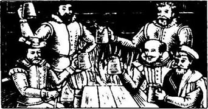
可这都是33年前的事了。我已是一个垂暮之年的老人，周围的人纷纷离我而去。1623年，安·莎士比亚去世，大约12年后，约翰·霍尔死于瘟疫，只有苏珊娜和珠迪丝尚健在。珠迪丝生过三个儿子，不幸都夭折了。所以这个家族无人能将可怜的威尔的名字传下去。苏姗娜的女儿伊丽莎白已经41岁，依然没有一子半女。苏姗娜有时仍过来看我，和我谈谈过去的日子。
我们如今生活在动荡的年代。去年1月，清教徒把查理国王送上了断头台。但终有一天，我们又会有一位国王，到时又会歌舞升平，又可以看戏了。
你不久就可以看到的！哦，当然啦，人们不会忘记威廉·莎士比亚。400年后，剧院依然会爆满，观众依然会为他的戏剧欢笑或落泪。他是运用英语语言创作最杰出的诗人。我想这一点，他自己也清楚。我记得在他的十四行诗中有这样的诗句……
没有王公们的大理石或镀金的墓碑
能够和我这些有力的诗句比寿……
——完——
Exercises
Exercises
A Checking your understanding
Chapters 1 - 3 How much can you remember? Check your answers.
1 Which play did Queen Elizabeth watch on 6th January, 1601?
2 What did Will's father do?
3 How old was Will when he got married?
4 What were the names of Will's three children?
Chapters 4-6 Are these sentences true (T) or false (F)?
1 Will loved the life of an actor in London.
2 Richard Burbage was an actor with the Queen's Men.
3 Plays in the Rose theatre were always in the evening.
4 The City Council closed the theatres in 1592 because of the plague.
5 Will wrote his poem Venus and Adonis for Lord Southampton.
6 A girl played the part of Juliet in Romeo and Juliet.
7 Will's son Hamnet died when he was eleven years old.
8 Will bought a new house for his family right in the middle of London.
Chapters 7 - 9 Who, or what, in the.se chapters ...
1 ... wanted Will to write a play about Sir John Falstaff in love?
2 ... was the name of the new playhouse in London?
3 ... played the part of Prince Hamlet?
4 ... became the new King of England in 1603?
5 ... got married in June, 1607?
6 ... was the name of the inn where all the writers and poets went?
7 ... liked to find mistakes in Will's plays?
Chapters 10 - 12 Write answers to these questions
1 Why did the King's Men make more money in the Blackfriars theatre?
2 What happened to the Globe theatre in 1613?
3 Why did Will go to London in the spring of 1616?
4 How old was Will when he died?
B Working with language
1 Use these words to join the sentences together.
Because when but and
1 Will worked for his father in Henley Street. He left school.
2 A new actor only got six shillings a week. There wasn't work every week.
3 Toby didn't want to be an actor. He couldn't remember his words.
4 Perhaps Emilia Lanier was Will's Dark Lady. Toby didn't really know.
2 Put together these beginnings and endings of sentences.
1 Romeo and Juliet is a very sad play,
2 Will's play Henry Ⅴ is about a famous English king.
3 Ben Jonson wrote clever plays,
4 The King's Men always did the plays at the Globe
5 who fought a war in France.
6 but the playgoers liked Will's plays better.
7 before they took them to the King's court.
8 because the young lovers die in the end.
C Activities
1 Imagine that when Will's father dies, Anne asks Will to leave London and come home to Stratford. She wants him to stop acting and writing plays, and to be a glove-maker again. Will, of course, does not want to do this. Write down their conversation and act it out in class.
2 Imagine that Shakespeare is alive today and you want him to write a play for you. Write him a letter and tell him, in a few sentences, what the play must be about. For example, will it be about war and fighting, or family life, or a murder mystery? What kind of people will be in it, and what costumes must they wear? Will the play have a happy or a sad ending?
3 Who is, or was, a famous writer in your own country? Find out something about his or her life and write a short the class chooses a different writer, you can put together a small dictionary of famous writers.
封底
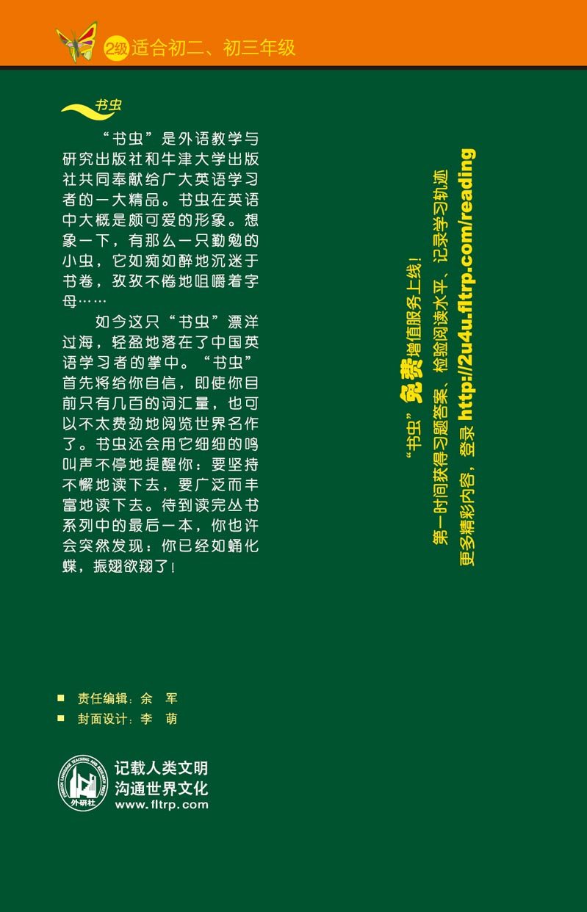